Chapter 10: Liquids and Solids¶
Introduction¶
Learning Objectives
- Intermolecular Forces
- Properties of Liquids
- Phase Transitions
- Phase Diagrams
- The Solid State of Matter
- Lattice Structures in Crystalline Solids
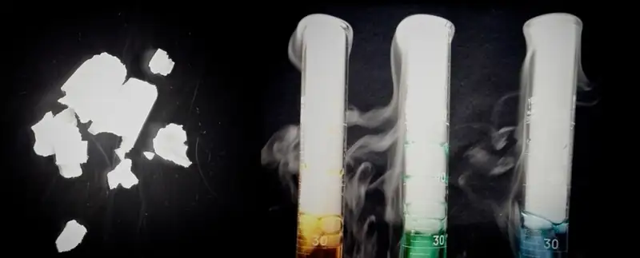
Leprosy has been a devastating disease throughout much of human history. Aside from the symptoms and complications of the illness, its social stigma led sufferers to be cast out of communities and isolated in colonies; in some regions this practice lasted well into the twentieth century. At that time, the best potential treatment for leprosy was oil from the chaulmoogra tree, but the oil was extremely thick, causing blisters and making usage painful and ineffective. Healthcare professionals seeking a better application contacted Alice Ball, a young chemist at the University of Hawaii, who had focused her masters thesis on a similar plant. Ball initiated a sequence of procedures (repeated acidification and purification to change the characteristics of the oil and isolate the active substances (esters, discussed later in this text). The "Ball Method" as it later came to be called, became the standard treatment for leprosy for decades. In the liquid and solid states, atomic and molecular interactions are of considerable strength and play an important role in determining a number of physical properties of the substance. For example, the thickness, or viscosity, of the chaulmoogra oil was due to its intermolecular forces. In this chapter, the nature of these interactions and their effects on various physical properties of liquid and solid phases will be examined.
10.1 Intermolecular Forces¶
Learning Objectives
By the end of this section, you will be able to:
- Describe the types of intermolecular forces possible between atoms or molecules in condensed phases (dispersion forces, dipole-dipole attractions, and hydrogen bonding)
- Identify the types of intermolecular forces experienced by specific molecules based on their structures
- Explain the relation between the intermolecular forces present within a substance and the temperatures associated with changes in its physical state
As was the case for gaseous substances, the kinetic molecular theory may be used to explain the behavior of solids and liquids. In the following description, the term particle will be used to refer to an atom, molecule, or ion. Note that we will use the popular phrase “intermolecular attraction” to refer to attractive forces between the particles of a substance, regardless of whether these particles are molecules, atoms, or ions.
Consider these two aspects of the molecular-level environments in solid, liquid, and gaseous matter:
- Particles in a solid are tightly packed together and often arranged in a regular pattern; in a liquid, they are close together with no regular arrangement; in a gas, they are far apart with no regular arrangement.
- Particles in a solid vibrate about fixed positions and do not generally move in relation to one another; in a liquid, they move past each other but remain in essentially constant contact; in a gas, they move independently of one another except when they collide.
The differences in the properties of a solid, liquid, or gas reflect the strengths of the attractive forces between the atoms, molecules, or ions that make up each phase. The phase in which a substance exists depends on the relative extents of its intermolecular forces (IMFs) and the kinetic energies (KE) of its molecules. IMFs are the various forces of attraction that may exist between the atoms and molecules of a substance due to electrostatic phenomena, as will be detailed in this module. These forces serve to hold particles close together, whereas the particles’ KE provides the energy required to overcome the attractive forces and thus increase the distance between particles. Figure 10.2 illustrates how changes in physical state may be induced by changing the temperature, hence, the average KE, of a given substance.
![Three sealed flasks are labeled, “Crystalline solid,” “Liquid,” and “Gas,” from left to right. The first flask holds a cube composed of small spheres sitting on the bottom while the second flask shows a lot of small spheres in the bottom that are spaced a small distance apart from one another and have lines around them to indicate motion. The third flask shows a few spheres spread far from one another with larger lines to indicate motion. There is a right-facing arrow that spans the top of all three flasks. The arrow is labeled, “Increasing K E ( temperature ).” There is a left-facing arrow that spans the bottom of all three flasks. The arrow is labeled, “Increasing I M F.”](img/cnx-chem-10-01-kmtphases1.webp)
As an example of the processes depicted in this figure, consider a sample of water. When gaseous water is cooled sufficiently, the attractions between H2O molecules will be capable of holding them together when they come into contact with each other; the gas condenses, forming liquid H2O. For example, liquid water forms on the outside of a cold glass as the water vapor in the air is cooled by the cold glass, as seen in Figure 10.3.
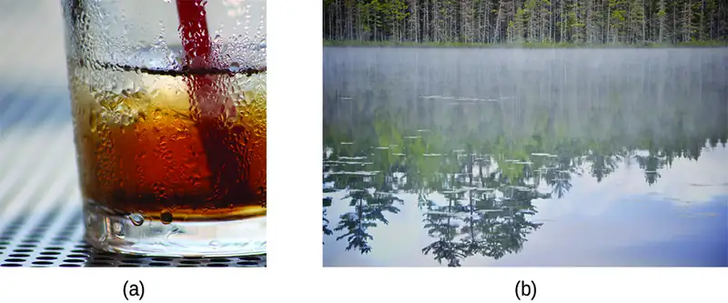
We can also liquefy many gases by compressing them, if the temperature is not too high. The increased pressure brings the molecules of a gas closer together, such that the attractions between the molecules become strong relative to their KE. Consequently, they form liquids. Butane, C4H10, is the fuel used in disposable lighters and is a gas at standard temperature and pressure. Inside the lighter’s fuel compartment, the butane is compressed to a pressure that results in its condensation to the liquid state, as shown in Figure 10.4.
Finally, if the temperature of a liquid becomes sufficiently low, or the pressure on the liquid becomes sufficiently high, the molecules of the liquid no longer have enough KE to overcome the IMF between them, and a solid forms. A more thorough discussion of these and other changes of state, or phase transitions, is provided in a later module of this chapter.
Link to Learning
Access this interactive simulation on states of matter, phase transitions, and intermolecular forces. This simulation is useful for visualizing concepts introduced throughout this chapter.
Forces between Molecules¶
Under appropriate conditions, the attractions between all gas molecules will cause them to form liquids or solids. This is due to intermolecular forces, not intramolecular forces. Intramolecular forces are those within the molecule that keep the molecule together, for example, the bonds between the atoms. Intermolecular forces are the attractions between molecules, which determine many of the physical properties of a substance. Figure 10.5 illustrates these different molecular forces. The strengths of these attractive forces vary widely, though usually the IMFs between small molecules are weak compared to the intramolecular forces that bond atoms together within a molecule. For example, to overcome the IMFs in one mole of liquid HCl and convert it into gaseous HCl requires only about 17 kilojoules. However, to break the covalent bonds between the hydrogen and chlorine atoms in one mole of HCl requires about 25 times more energy—430 kilojoules.
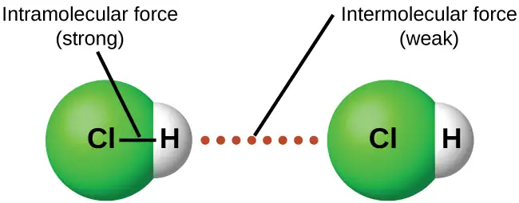
All of the attractive forces between neutral atoms and molecules are known as van der Waals forces, although they are usually referred to more informally as intermolecular attraction. We will consider the various types of IMFs in the next three sections of this module.
Dispersion Forces¶
One of the three van der Waals forces is present in all condensed phases, regardless of the nature of the atoms or molecules composing the substance. This attractive force is called the London dispersion force in honor of German-born American physicist Fritz London who, in 1928, first explained it. This force is often referred to as simply the dispersion force. Because the electrons of an atom or molecule are in constant motion (or, alternatively, the electron’s location is subject to quantum-mechanical variability), at any moment in time, an atom or molecule can develop a temporary, instantaneous dipole if its electrons are distributed asymmetrically. The presence of this dipole can, in turn, distort the electrons of a neighboring atom or molecule, producing an induced dipole. These two rapidly fluctuating, temporary dipoles thus result in a relatively weak electrostatic attraction between the species—a so-called dispersion force like that illustrated in Figure 10.6.
![Two pairs of molecules are shown where each molecule has one larger blue side labeled “delta sign, negative sign” and a smaller red side labeled “delta sign, positive sign.” Toward the middle of the both molecules, but still on each distinct side, is a black dot. Between the two images is a dotted line labeled, “Attractive force.” In the first image, the red and blue sides are labeled, “Unequal distribution of electrons.” Below both images are brackets. The brackets are labeled, “Temporary dipoles.”](img/cnx-chem-10-01-dispforces.webp)
Dispersion forces that develop between atoms in different molecules can attract the two molecules to each other. The forces are relatively weak, however, and become significant only when the molecules are very close. Larger and heavier atoms and molecules exhibit stronger dispersion forces than do smaller and lighter atoms and molecules. F2 and Cl2 are gases at room temperature (reflecting weaker attractive forces); Br2 is a liquid, and I2 is a solid (reflecting stronger attractive forces). Trends in observed melting and boiling points for the halogens clearly demonstrate this effect, as seen in Table 10.1.
Table 10.1
| Melting and Boiling Points of the Halogens | ||||
|---|---|---|---|---|
| Halogen | Molar Mass | Atomic Radius | Melting Point | Boiling Point |
| fluorine, F2 | 38 g/mol | 72 pm | 53 K | 85 K |
| chlorine, Cl2 | 71 g/mol | 99 pm | 172 K | 238 K |
| bromine, Br2 | 160 g/mol | 114 pm | 266 K | 332 K |
| iodine, I2 | 254 g/mol | 133 pm | 387 K | 457 K |
| astatine, At2 | 420 g/mol | 150 pm | 575 K | 610 K |
The increase in melting and boiling points with increasing atomic/molecular size may be rationalized by considering how the strength of dispersion forces is affected by the electronic structure of the atoms or molecules in the substance. In a larger atom, the valence electrons are, on average, farther from the nuclei than in a smaller atom. Thus, they are less tightly held and can more easily form the temporary dipoles that produce the attraction. The measure of how easy or difficult it is for another electrostatic charge (for example, a nearby ion or polar molecule) to distort a molecule’s charge distribution (its electron cloud) is known as polarizability. A molecule that has a charge cloud that is easily distorted is said to be very polarizable and will have large dispersion forces; one with a charge cloud that is difficult to distort is not very polarizable and will have small dispersion forces.
Example 10.1 London Forces and Their Effects
Order the following compounds of a group 14 element and hydrogen from lowest to highest boiling point: CH4, SiH4, GeH4, and SnH4. Explain your reasoning.
Solution
Applying the skills acquired in the chapter on chemical bonding and molecular geometry, all of these compounds are predicted to be nonpolar, so they may experience only dispersion forces: the smaller the molecule, the less polarizable and the weaker the dispersion forces; the larger the molecule, the larger the dispersion forces. The molar masses of CH4, SiH4, GeH4, and SnH4 are approximately 16 g/mol, 32 g/mol, 77 g/mol, and 123 g/mol, respectively. Therefore, CH4 is expected to have the lowest boiling point and SnH4 the highest boiling point. The ordering from lowest to highest boiling point is expected to be CH4 < SiH4 < GeH4 < SnH4.
A graph of the actual boiling points of these compounds versus the period of the group 14 element shows this prediction to be correct:
![A line graph, titled “Carbon Family,” is shown where the y-axis is labeled “Temperature, ( degree sign C )” and has values of “negative 200” to “negative 40” from bottom to top in increments of 20. The x-axis is labeled “Period” and has values of “0” to “5” in increments of 1. The first point on the graph is labeled “C H subscript 4” and is at point “2, negative 160.” The second point on the graph is labeled “S i H subscript 4” and is at point “3, negative 120” while the third point on the graph is labeled “G e H subscript 4” and is at point “4, negative 100.” The fourth point on the graph is labeled “S n H subscript 4” and is at point “5, negative 60.”](img/cnx-chem-10-01-boilpoints-img.webp)
Check Your Learning
Order the following hydrocarbons from lowest to highest boiling point: C2H6, C3H8, and C4H10.
Answer:
C2H6 < C3H8 < C4H10. All of these compounds are nonpolar and only have London dispersion forces: the larger the molecule, the larger the dispersion forces and the higher the boiling point. The ordering from lowest to highest boiling point is therefore C2H6 < C3H8 < C4H10.
The shapes of molecules also affect the magnitudes of the dispersion forces between them. For example, boiling points for the isomers n-pentane, isopentane, and neopentane (shown in Figure 10.7) are 36 °C, 27 °C, and 9.5 °C, respectively. Even though these compounds are composed of molecules with the same chemical formula, C5H12, the difference in boiling points suggests that dispersion forces in the liquid phase are different, being greatest for n-pentane and least for neopentane. The elongated shape of n-pentane provides a greater surface area available for contact between molecules, resulting in correspondingly stronger dispersion forces. The more compact shape of isopentane offers a smaller surface area available for intermolecular contact and, therefore, weaker dispersion forces. Neopentane molecules are the most compact of the three, offering the least available surface area for intermolecular contact and, hence, the weakest dispersion forces. This behavior is analogous to the connections that may be formed between strips of VELCRO brand fasteners: the greater the area of the strip’s contact, the stronger the connection.
![Three images of molecules are shown. The first shows a cluster of large, gray spheres each bonded together and to several smaller, white spheres. There is a gray, jagged line and then the mirror image of the first cluster of spheres is shown. Above these two clusters is the label, “Small contact area, weakest attraction,” and below is the label, “neopentane boiling point: 9.5 degrees C.” The second shows a chain of three gray spheres bonded by the middle sphere to a fourth gray sphere. Each gray sphere is bonded to several smaller, white spheres. There is a jagged, gray line and then the mirror image of the first chain appears. Above these two chains is the label, “Less surface area, less attraction,” and below is the label, “isopentane boiling point: 27 degrees C.” The third image shows a chain of five gray spheres bonded together and to several smaller, white spheres. There is a jagged gray line and then the mirror image of the first chain appears. Above these chains is the label, “Large contact area, strong attraction,” and below is the label, “n-pentane boiling point 36 degrees C.”](img/cnx-chem-10-01-pentiso.webp)
Chemistry in Everyday Life: Geckos and Intermolecular Forces
Geckos have an amazing ability to adhere to most surfaces. They can quickly run up smooth walls and across ceilings that have no toe-holds, and they do this without having suction cups or a sticky substance on their toes. And while a gecko can lift its feet easily as it walks along a surface, if you attempt to pick it up, it sticks to the surface. How are geckos (as well as spiders and some other insects) able to do this? Although this phenomenon has been investigated for hundreds of years, scientists only recently uncovered the details of the process that allows geckos’ feet to behave this way.
Geckos’ toes are covered with hundreds of thousands of tiny hairs known as setae, with each seta, in turn, branching into hundreds of tiny, flat, triangular tips called spatulae. The huge numbers of spatulae on its setae provide a gecko, shown in Figure 10.8, with a large total surface area for sticking to a surface. In 2000, Kellar Autumn, who leads a multi-institutional gecko research team, found that geckos adhered equally well to both polar silicon dioxide and nonpolar gallium arsenide. This proved that geckos stick to surfaces because of dispersion forces—weak intermolecular attractions arising from temporary, synchronized charge distributions between adjacent molecules. Although dispersion forces are very weak, the total attraction over millions of spatulae is large enough to support many times the gecko’s weight.
In 2014, two scientists developed a model to explain how geckos can rapidly transition from “sticky” to “non-sticky.” Alex Greaney and Congcong Hu at Oregon State University described how geckos can achieve this by changing the angle between their spatulae and the surface. Geckos’ feet, which are normally nonsticky, become sticky when a small shear force is applied. By curling and uncurling their toes, geckos can alternate between sticking and unsticking from a surface, and thus easily move across it. Later research led by Alyssa Stark at University of Akron showed that geckos can maintain their hold on hydrophobic surfaces (similar to the leaves in their habitats) equally well whether the surfaces were wet or dry. Stark's experiment used a ribbon to gently pull the geckos until they slipped, so that the researchers could determine the geckos' ability to hold various surfaces under wet and dry conditions. Further investigations may eventually lead to the development of better adhesives and other applications.
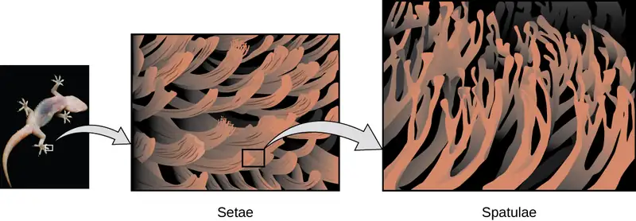
Link to Learning
Watch this video to learn more about Kellar Autumn’s research that determined that van der Waals forces are responsible for a gecko’s ability to cling and climb.
Dipole-Dipole Attractions¶
Recall from the chapter on chemical bonding and molecular geometry that polar molecules have a partial positive charge on one side and a partial negative charge on the other side of the molecule—a separation of charge called a dipole. Consider a polar molecule such as hydrogen chloride, HCl. In the HCl molecule, the more electronegative Cl atom bears the partial negative charge, whereas the less electronegative H atom bears the partial positive charge. An attractive force between HCl molecules results from the attraction between the positive end of one HCl molecule and the negative end of another. This attractive force is called a dipole-dipole attraction—the electrostatic force between the partially positive end of one polar molecule and the partially negative end of another, as illustrated in Figure 10.9.
![Two pairs of molecules are shown where each molecule has one larger blue side labeled “delta sign, negative sign” and a smaller red side labeled “delta sign, positive sign. In the first pair, the red sides of the two molecules both face to the left and the blue side to the right. A horizontal dotted line lies in between the two. In the second pair, the molecules face up and down, with the red and blue ends aligning. A horizontal dotted line lies between the red and blue ends facing upward and another lies between the red and blue ends facing downward.](img/cnx-chem-10-01-dipdip.webp)
The effect of a dipole-dipole attraction is apparent when we compare the properties of HCl molecules to nonpolar F2 molecules. Both HCl and F2 consist of the same number of atoms and have approximately the same molecular mass. At a temperature of 150 K, molecules of both substances would have the same average KE. However, the dipole-dipole attractions between HCl molecules are sufficient to cause them to “stick together” to form a liquid, whereas the relatively weaker dispersion forces between nonpolar F2 molecules are not, and so this substance is gaseous at this temperature. The higher normal boiling point of HCl (188 K) compared to F2 (85 K) is a reflection of the greater strength of dipole-dipole attractions between HCl molecules, compared to the attractions between nonpolar F2 molecules. We will often use values such as boiling or freezing points, or enthalpies of vaporization or fusion, as indicators of the relative strengths of IMFs of attraction present within different substances.
Example 10.2 Dipole-Dipole Forces and Their Effects
Predict which will have the higher boiling point: N2 or CO. Explain your reasoning.
Solution
CO and N2 are both diatomic molecules with masses of about 28 amu, so they experience similar London dispersion forces. Because CO is a polar molecule, it experiences dipole-dipole attractions. Because N2 is nonpolar, its molecules cannot exhibit dipole-dipole attractions. The dipole-dipole attractions between CO molecules are comparably stronger than the dispersion forces between nonpolar N2 molecules, so CO is expected to have the higher boiling point.
Check Your Learning
Predict which will have the higher boiling point: ICl or Br2. Explain your reasoning.
Answer:
ICl. ICl and Br2 have similar masses (~160 amu) and therefore experience similar London dispersion forces. ICl is polar and thus also exhibits dipole-dipole attractions; Br2 is nonpolar and does not. The relatively stronger dipole-dipole attractions require more energy to overcome, so ICl will have the higher boiling point.
Hydrogen Bonding¶
Nitrosyl fluoride (ONF, molecular mass 49 amu) is a gas at room temperature. Water (H2O, molecular mass 18 amu) is a liquid, even though it has a lower molecular mass. We clearly cannot attribute this difference between the two compounds to dispersion forces. Both molecules have about the same shape and ONF is the heavier and larger molecule. It is, therefore, expected to experience more significant dispersion forces. Additionally, we cannot attribute this difference in boiling points to differences in the dipole moments of the molecules. Both molecules are polar and exhibit comparable dipole moments. The large difference between the boiling points is due to a particularly strong dipole-dipole attraction that may occur when a molecule contains a hydrogen atom bonded to a fluorine, oxygen, or nitrogen atom (the three most electronegative elements). The very large difference in electronegativity between the H atom (2.1) and the atom to which it is bonded (4.0 for an F atom, 3.5 for an O atom, or 3.0 for a N atom), combined with the very small size of a H atom and the relatively small sizes of F, O, or N atoms, leads to highly concentrated partial charges with these atoms. Molecules with F-H, O-H, or N-H moieties are very strongly attracted to similar moieties in nearby molecules, a particularly strong type of dipole-dipole attraction called hydrogen bonding. Examples of hydrogen bonds include HF⋯HF, H2O⋯HOH, and H3N⋯HNH2, in which the hydrogen bonds are denoted by dots. Figure 10.10 illustrates hydrogen bonding between water molecules.
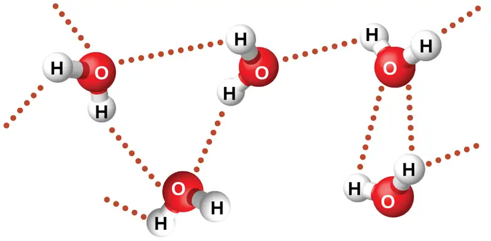
Despite use of the word “bond,” keep in mind that hydrogen bonds are intermolecular attractive forces, not intramolecular attractive forces (covalent bonds). Hydrogen bonds are much weaker than covalent bonds, only about 5 to 10% as strong, but are generally much stronger than other dipole-dipole attractions and dispersion forces.
Hydrogen bonds have a pronounced effect on the properties of condensed phases (liquids and solids). For example, consider the trends in boiling points for the binary hydrides of group 15 (NH3, PH3, AsH3, and SbH3), group 16 hydrides (H2O, H2S, H2Se, and H2Te), and group 17 hydrides (HF, HCl, HBr, and HI). The boiling points of the heaviest three hydrides for each group are plotted in Figure 10.11. As we progress down any of these groups, the polarities of the molecules decrease slightly, whereas the sizes of the molecules increase substantially. The effect of increasingly stronger dispersion forces dominates that of increasingly weaker dipole-dipole attractions, and the boiling points are observed to increase steadily.
![A line graph is shown where the y-axis is labeled “Boiling point (, degree sign, C )” and has values of “ negative 150” to “150” from bottom to top in increments of 50. The x-axis is labeled “Period” and has values of “0” to “5” in increments of 1. Three lines are shown on the graph and are labeled in the legend. The red line is labeled as “halogen family,” the blue is “oxygen family” and the green is “nitrogen family.” The first point on the red line is labeled “question mark” and is at point “2, negative 120”. The second point on the line is labeled “H C l” and is at point “3, negative 80” while the third point on the line is labeled “H B r” and is at point “4, negative 60”. The fourth point on the line is labeled “H I” and is at point “5, negative 40.” The first point on the green line is labeled “question mark” and is at point “2, negative 125.” The second point on the line is labeled “P H, subscript 3” and is at point “3, negative 80” while the third point on the line is labeled “A s H, subscript 3” and is at point “4, negative 55.” The fourth point on the line is labeled “S b H, subscript 3” and is at point “5, negative 10.” The first point on the blue line is labeled “question mark” and is at point “2, negative 80.” The second point on the line is labeled “H, subscript 2, S” and is at point “3, negative 55” while the third point on the line is labeled “H, subscript 2, S e” and is at point “4, negative 45.” The fourth point on the line is labeled “H, subscript 2, T e” and is at point “5, negative 3.”](img/cnx-chem-10-01-hydridebp1.webp)
If we use this trend to predict the boiling points for the lightest hydride for each group, we would expect NH3 to boil at about −120 °C, H2O to boil at about −80 °C, and HF to boil at about −110 °C. However, when we measure the boiling points for these compounds, we find that they are dramatically higher than the trends would predict, as shown in Figure 10.12. The stark contrast between our naïve predictions and reality provides compelling evidence for the strength of hydrogen bonding.
![A line graph is shown where the y-axis is labeled “Boiling point, ( degree sign, C )” and has values of “negative 150” to “150” from bottom to top in increments of 50. The x-axis is labeled “Period” and has values of “0” to “5” in increments of 1. Three lines are shown on the graph and are labeled in the legend. The red line is labeled as “halogen family,” the blue is “oxygen family” and the green is “nitrogen family.” The first point on the red line is labeled “H F” and is at point “2, 25.” The second point on the line is labeled “H C l” and is at point “3, negative 80” while the third point on the line is labeled “H B r” and is at point “4, negative 60.” The fourth point on the line is labeled “H I” and is at point “5, negative 40.” The first point on the green line is labeled “N H, subscript 3” and is at point “2, negative 40.” The second point on the line is labeled “P H, subscript 3” and is at point “3, negative 80” while the third point on the line is labeled “A s H, subscript 3” and is at point “4, negative 55.” The fourth point on the line is labeled “S b H, subscript 3” and is at point “5, negative 10.” The first point on the blue line is labeled “H, subscript 2, O” and is at point “2, 100.” The second point on the line is labeled “H, subscript 2, S” and is at point “3, negative 55” while the third point on the line is labeled “H, subscript 2, S e” and is at point “4, negative 45.” The fourth point on the line is labeled “H, subscript 2, T e” and is at point “5, negative 3.”](img/cnx-chem-10-01-hydridebp2.webp)
Example 10.3 Effect of Hydrogen Bonding on Boiling Points
Consider the compounds dimethylether (CH3OCH3), ethanol (CH3CH2OH), and propane (CH3CH2CH3). Their boiling points, not necessarily in order, are −42.1 °C, −24.8 °C, and 78.4 °C. Match each compound with its boiling point. Explain your reasoning.
Solution
The VSEPR-predicted shapes of CH3OCH3, CH3CH2OH, and CH3CH2CH3 are similar, as are their molar masses (46 g/mol, 46 g/mol, and 44 g/mol, respectively), so they will exhibit similar dispersion forces. Since CH3CH2CH3 is nonpolar, it may exhibit only dispersion forces. Because CH3OCH3 is polar, it will also experience dipole-dipole attractions. Finally, CH3CH2OH has an −OH group, and so it will experience the uniquely strong dipole-dipole attraction known as hydrogen bonding. So the ordering in terms of strength of IMFs, and thus boiling points, is CH3CH2CH3 < CH3OCH3 < CH3CH2OH. The boiling point of propane is −42.1 °C, the boiling point of dimethylether is −24.8 °C, and the boiling point of ethanol is 78.5 °C.
Check Your Learning
Ethane (CH3CH3) has a melting point of −183 °C and a boiling point of −89 °C. Predict the melting and boiling points for methylamine (CH3NH2). Explain your reasoning.
Answer:
The melting point and boiling point for methylamine are predicted to be significantly greater than those of ethane. CH3CH3 and CH3NH2 are similar in size and mass, but methylamine possesses an −NH group and therefore may exhibit hydrogen bonding. This greatly increases its IMFs, and therefore its melting and boiling points. It is difficult to predict values, but the known values are a melting point of −93 °C and a boiling point of −6 °C.
How Sciences Interconnect: Hydrogen Bonding and DNA
Deoxyribonucleic acid (DNA) is found in every living organism and contains the genetic information that determines the organism’s characteristics, provides the blueprint for making the proteins necessary for life, and serves as a template to pass this information on to the organism’s offspring. A DNA molecule consists of two (anti-)parallel chains of repeating nucleotides, which form its well-known double helical structure, as shown in Figure 10.13.
![Two images are shown. The first lies on the left side of the page and shows a helical structure like a twisted ladder where the rungs of the ladder, labeled “Base pair” are red, yellow, green and blue paired bars. The red and yellow bars, which are always paired together, are labeled in the legend, which is titled “Nitrogenous bases” as “adenine” and “thymine,” respectively. The blue and green bars, which are always paired together, are labeled in the legend as “guanine” and “cytosine,” respectively. At the top of the helical structure, the left-hand side rail, or “Sugar, dash, phosphate backbone,” is labeled as “3, prime” while the right is labeled as “5, prime.” These labels are reversed at the bottom of the helix. To the right of the page is a large Lewis structure. The top left corner of this structure, labeled “5, prime,” shows a phosphorus atom single bonded to three oxygen atoms, one of which has a superscripted negative charge, and double bonded to a fourth oxygen atom. One of the single bonded oxygen atoms is single bonded to the left corner of a five-membered ring with an oxygen atom at its top point and which is single bonded to an oxygen atom on the bottom left. This oxygen atom is single bonded to a phosphorus atom that is single bonded to two other hydrogen atoms and double bonded to a fourth oxygen atom. The lower left of these oxygen atoms is single bonded to another oxygen atom that is single bonded to a five-membered ring with an oxygen in the upper bonding site. The bottom left of this ring has a hydroxyl group attached to it while the upper right carbon is single bonded to a nitrogen atom that is part of a five-membered ring bonded to a six-membered ring. Both of these rings have points of unsaturation and nitrogen atoms bonded into their structures. On the right side of the six-membered ring are two single bonded amine groups and a double bonded oxygen. Three separate dotted lines extend from these sites to corresponding sites on a second six-membered ring. This ring has points of unsaturation and a nitrogen atom in the bottom right bonding position that is single bonded to a five-membered ring on the right side of the image. This ring is single bonded to a carbon that is single bonded to an oxygen that is single bonded to a phosphorus. The phosphorus is single bonded to two other oxygen atoms and double bonded to a fourth oxygen atom. This group is labeled “5, prime.” The five-membered ring is also bonded on the top side to an oxygen that is bonded to a phosphorus single bonded to two other oxygen atoms and double bonded to a fourth oxygen atom. The upper left oxygen of this group is single bonded to a carbon that is single bonded to a five-membered ring with an oxygen in the bottom bonding position. This ring has a hydroxyl group on its upper right side that is labeled “3, prime” and is bonded on the left side to a nitrogen that is a member of a five-membered ring. This ring is bonded to a six-membered ring and both have points of unsaturation. This ring has a nitrogen on the left side, as well as an amine group, that have two dotted lines leading from them to an oxygen and amine group on a six membered ring. These dotted lines are labeled “Hydrogen bonds.” The six membered ring also has a double bonded oxygen on its lower side and a nitrogen atom on its left side that is single bonded to a five-membered ring. This ring connects to the two phosphate groups mentioned at the start of this to form a large circle. The name “guanine” is written below the lower left side of this image while the name “cytosine” is written on the lower right. The name “thymine” is written above the right side of the image and “adenine” is written on the top right. Three sections are indicated below the images where the left is labeled “Sugar, dash, phosphate backbone,” the middle is labeled “Bases” and the right is labeled “Sugar, dash, phosphate backbone.”](img/cnx-chem-10-01-dna.webp)
Each nucleotide contains a (deoxyribose) sugar bound to a phosphate group on one side, and one of four nitrogenous bases on the other. Two of the bases, cytosine (C) and thymine (T), are single-ringed structures known as pyrimidines. The other two, adenine (A) and guanine (G), are double-ringed structures called purines. These bases form complementary base pairs consisting of one purine and one pyrimidine, with adenine pairing with thymine, and cytosine with guanine. Each base pair is held together by hydrogen bonding. A and T share two hydrogen bonds, C and G share three, and both pairings have a similar shape and structure Figure 10.14.
![A large Lewis structure is shown. The top left corner of this structure, labeled “5, prime,” shows a phosphorus atom single bonded to three oxygen atoms, one of which has a superscripted negative charge, and double bonded to a fourth oxygen atom. One of the single bonded oxygen atoms is single bonded to the left corner of a five-membered ring with an oxygen atom at its top point and which is single bonded to an oxygen atom on the bottom left. This oxygen atom is single bonded to a phosphorus atom that is single bonded to two other hydrogen atoms and double bonded to a fourth oxygen atom. The lower left of these oxygen atoms is single bonded to another oxygen atom that is single bonded to a five-membered ring with an oxygen in the upper bonding site. The bottom left of this ring has a hydroxyl group attached to it while the upper right carbon is single bonded to a nitrogen atom that is part of a five-membered ring bonded to a six-membered ring. Both of these rings have points of unsaturation and nitrogen atoms bonded into their structures. On the right side of the six-membered ring are two single bonded amine groups and a double bonded oxygen. Three separate dotted lines extend from these sites to corresponding sites on a second six-membered ring. This ring has points of unsaturation and a nitrogen atom in the bottom right bonding position that is single bonded to a five-membered ring on the right side of the image. This ring is single bonded to a carbon that is single bonded to an oxygen that is single bonded to a phosphorus. The phosphorus is single bonded to two other oxygen atoms and double bonded to a fourth oxygen atom. This group is labeled “5, prime.” The five-membered ring is also bonded on the top side to an oxygen that is bonded to a phosphorus single bonded to two other oxygen atoms and double bonded to a fourth oxygen atom. The upper left oxygen of this group is single bonded to a carbon that is single bonded to a five-membered ring with an oxygen in the bottom bonding position. This ring has a hydroxyl group on its upper right side that is labeled “3, prime” and is bonded on the left side to a nitrogen that is a member of a five-membered ring. This ring is bonded to a six-membered ring and both have points of unsaturation. This ring has a nitrogen on the left side, as well as an amine group, that have two dotted lines leading from them to an oxygen and amine group on a six membered ring. These dotted lines are labeled “Hydrogen bonds.” The six membered ring also has a double bonded oxygen on its lower side and a nitrogen atom on its left side that is single bonded to a five-membered ring. This ring connects to the two phosphate groups mentioned at the start of this to form a large circle. The name “guanine” is written below the lower left side of this image while the name “cytosine” is written on the lower right. The name “thymine” is written above the right side of the image and “adenine” is written on the top right. Three sections are indicated below the images where the left is labeled “Sugar, dash, phosphate backbone,” the middle is labeled “Bases” and the right is labeled “Sugar, dash, phosphate backbone.”](img/cnx-chem-10-01-dna2.webp)
The cumulative effect of millions of hydrogen bonds effectively holds the two strands of DNA together. Importantly, the two strands of DNA can relatively easily “unzip” down the middle since hydrogen bonds are relatively weak compared to the covalent bonds that hold the atoms of the individual DNA molecules together. This allows both strands to function as a template for replication.
10.2 Properties of Liquids¶
Learning Objectives
By the end of this section, you will be able to:
- Distinguish between adhesive and cohesive forces
- Define viscosity, surface tension, and capillary rise
- Describe the roles of intermolecular attractive forces in each of these properties/phenomena
When you pour a glass of water, or fill a car with gasoline, you observe that water and gasoline flow freely. But when you pour syrup on pancakes or add oil to a car engine, you note that syrup and motor oil do not flow as readily. The viscosity of a liquid is a measure of its resistance to flow. Water, gasoline, and other liquids that flow freely have a low viscosity. Honey, syrup, motor oil, and other liquids that do not flow freely, like those shown in Figure 10.15, have higher viscosities. We can measure viscosity by measuring the rate at which a metal ball falls through a liquid (the ball falls more slowly through a more viscous liquid) or by measuring the rate at which a liquid flows through a narrow tube (more viscous liquids flow more slowly).
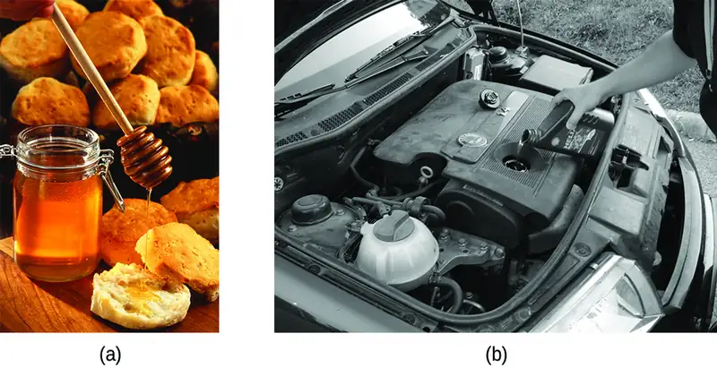
The IMFs between the molecules of a liquid, the size and shape of the molecules, and the temperature determine how easily a liquid flows. As Table 10.2 shows, the more structurally complex are the molecules in a liquid and the stronger the IMFs between them, the more difficult it is for them to move past each other and the greater is the viscosity of the liquid. As the temperature increases, the molecules move more rapidly and their kinetic energies are better able to overcome the forces that hold them together; thus, the viscosity of the liquid decreases.
Table 10.2
| Viscosities of Common Substances at 25 °C | ||
|---|---|---|
| Substance | Formula | Viscosity (mPa·s) |
| water | H2O | 0.890 |
| mercury | Hg | 1.526 |
| ethanol | C2H5OH | 1.074 |
| octane | C8H18 | 0.508 |
| ethylene glycol | CH2(OH)CH2(OH) | 16.1 |
| honey | variable | ~2,000–10,000 |
| motor oil | variable | ~50–500 |
The various IMFs between identical molecules of a substance are examples of cohesive forces. The molecules within a liquid are surrounded by other molecules and are attracted equally in all directions by the cohesive forces within the liquid. However, the molecules on the surface of a liquid are attracted only by about one-half as many molecules. Because of the unbalanced molecular attractions on the surface molecules, liquids contract to form a shape that minimizes the number of molecules on the surface—that is, the shape with the minimum surface area. A small drop of liquid tends to assume a spherical shape, as shown in Figure 10.16, because in a sphere, the ratio of surface area to volume is at a minimum. Larger drops are more greatly affected by gravity, air resistance, surface interactions, and so on, and as a result, are less spherical.
![A photo of a spider’s web with droplets of water attached to it is shown. Two images are shown the right of the photo and arrows lead from the photo to the images. The upper image shows twenty eight blue spheres stacked one atop the other in the bottom of a circular background. Five arrows are drawn pointing to the sides and downward from the sphere in the top middle of the drawing. The lower image shows another circular background of the same size as the first, but this time the blue spheres fill the image and are packed closely together. A sphere in the middle has six arrows pointing in all directions away from it.](img/cnx-chem-10-02-droplet.webp)
Surface tension is defined as the energy required to increase the surface area of a liquid, or the force required to increase the length of a liquid surface by a given amount. This property results from the cohesive forces between molecules at the surface of a liquid, and it causes the surface of a liquid to behave like a stretched rubber membrane. Surface tensions of several liquids are presented in Table 10.3. Among common liquids, water exhibits a distinctly high surface tension due to strong hydrogen bonding between its molecules. As a result of this high surface tension, the surface of water represents a relatively “tough skin” that can withstand considerable force without breaking. A steel needle carefully placed on water will float. Some insects, like the one shown in Figure 10.17, even though they are denser than water, move on its surface because they are supported by the surface tension.
Table 10.3
| Surface Tensions of Common Substances at 25 °C | ||
|---|---|---|
| Substance | Formula | Surface Tension (mN/m) |
| water | H2O | 71.99 |
| mercury | Hg | 458.48 |
| ethanol | C2H5OH | 21.97 |
| octane | C8H18 | 21.14 |
| ethylene glycol | CH2(OH)CH2(OH) | 47.99 |
![A photo and a diagram as shown and a right-facing arrow leads from the photo to the image. The photo shows an insect standing on the surface of a sample of water. The image shows a square background that is two thirds covered in blue spheres that are closely packet together. A brown line starts at the upper left corner of the background and rests on top of the first row of spheres. The sphere directly under this low point of the line has four arrows drawn on it that face to both sides and downward. A sphere in the bottom center of the image has six arrows drawn on it that all face outward in different directions.](img/cnx-chem-10-02-strider.webp)
Surface tension is affected by a variety of variables, including the introduction of additional substances on the surface. In the late 1800s, Agnes Pockels, who was initially blocked from pursuing a scientific career but studied on her own, began investigating the impact and characteristics of soapy and greasy films in water. Using homemade materials, she developed an instrument known as a trough for measuring surface contaminants and their effects. With the support of renowned scientist Lord Rayleigh, her 1891 paper showed that surface contamination significantly reduces surface tension, and also that changing the characteristics of the surface (compressing or expanding it) also affects surface tension. Decades later, Irving Langmuir and Katharine Blodgett built on Pockels' work in their own trough and important advances in surface chemistry. Langmuir pioneered methods for producing single-molecule layers of film; Blodgett applied these to the development of non-reflective glass (critical for film-making and other applications), and also studied methods related to cleaning surfaces, which are important in semiconductor fabrication.
The IMFs of attraction between two different molecules are called adhesive forces. Consider what happens when water comes into contact with some surface. If the adhesive forces between water molecules and the molecules of the surface are weak compared to the cohesive forces between the water molecules, the water does not “wet” the surface. For example, water does not wet waxed surfaces or many plastics such as polyethylene. Water forms drops on these surfaces because the cohesive forces within the drops are greater than the adhesive forces between the water and the plastic. Water spreads out on glass because the adhesive force between water and glass is greater than the cohesive forces within the water. When water is confined in a glass tube, its meniscus (surface) has a concave shape because the water wets the glass and creeps up the side of the tube. On the other hand, the cohesive forces between mercury atoms are much greater than the adhesive forces between mercury and glass. Mercury therefore does not wet glass, and it forms a convex meniscus when confined in a tube because the cohesive forces within the mercury tend to draw it into a drop (Figure 10.18).
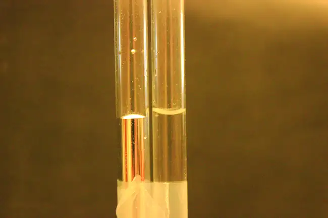
If you place one end of a paper towel in spilled wine, as shown in Figure 10.19, the liquid wicks up the paper towel. A similar process occurs in a cloth towel when you use it to dry off after a shower. These are examples of capillary action—when a liquid flows within a porous material due to the attraction of the liquid molecules to the surface of the material and to other liquid molecules. The adhesive forces between the liquid and the porous material, combined with the cohesive forces within the liquid, may be strong enough to move the liquid upward against gravity.
![A photo and a diagram are shown. In the photo, a paper towel is dipped into a bowl full of a red liquid sitting on a countertop. The red liquid is traveling up the lower part of the paper towel, and this section of the photo has a square drawn around it. A right-facing arrow leads from this square to the image. The image is square and has a background of two types of molecules, mixed together. The first type of molecule is composed of two bonded black spheres, one of which is single bonded to three white spheres and one of which is single bonded to two white spheres and a red sphere that is itself bonded to a white sphere. The other type of molecule is composed of six black spheres bonded together in a row and bonded to other red and white spheres. Six upward-facing arrows are drawn on top of this background. They have positive signs on their lower ends and negative signs on their heads. Four upward-facing arrows are drawn with their signs reversed.](img/cnx-chem-10-02-wicking.webp)
Towels soak up liquids like water because the fibers of a towel are made of molecules that are attracted to water molecules. Most cloth towels are made of cotton, and paper towels are generally made from paper pulp. Both consist of long molecules of cellulose that contain many −OH groups. Water molecules are attracted to these −OH groups and form hydrogen bonds with them, which draws the H2O molecules up the cellulose molecules. The water molecules are also attracted to each other, so large amounts of water are drawn up the cellulose fibers.
Capillary action can also occur when one end of a small diameter tube is immersed in a liquid, as illustrated in Figure 10.20. If the liquid molecules are strongly attracted to the tube molecules, the liquid creeps up the inside of the tube until the weight of the liquid and the adhesive forces are in balance. The smaller the diameter of the tube is, the higher the liquid climbs. It is partly by capillary action occurring in plant cells called xylem that water and dissolved nutrients are brought from the soil up through the roots and into a plant. Capillary action is the basis for thin layer chromatography, a laboratory technique commonly used to separate small quantities of mixtures. You depend on a constant supply of tears to keep your eyes lubricated and on capillary action to pump tear fluid away.
![An image of two beakers and a tube is shown. The first beaker, drawn on the left and labeled “Water,” is drawn half-full of a blue liquid. Two open-ended capillary tubes are placed vertically in the beaker and inserted into the liquid. The liquid is shown higher in the tubes than in the beaker and is labeled “Capillary attraction.” The second beaker, drawn in the middle and labeled “Mercury,” is drawn half-full of a gray liquid. Two open-ended capillary tubes are placed vertically in the beaker and inserted into the liquid. The liquid is shown lower in the tubes than in the beaker and is labeled “Capillary repulsion.” Lines point to the vertical tubes and label them “Capillary tubes.” A separate drawing of one of the vertical tubes from the first beaker is shown on the right. A right-facing arrow leads from the liquid in the tube to a square call-out box that shows a close-up view of the liquid’s surface. The distance across the tube is labeled “2 r” in this image.](img/cnx-chem-10-02-caprise.webp)
The height to which a liquid will rise in a capillary tube is determined by several factors as shown in the following equation:
In this equation, h is the height of the liquid inside the capillary tube relative to the surface of the liquid outside the tube, T is the surface tension of the liquid, θ is the contact angle between the liquid and the tube, r is the radius of the tube, ρ is the density of the liquid, and g is the acceleration due to gravity, 9.8 m/s2. When the tube is made of a material to which the liquid molecules are strongly attracted, they will spread out completely on the surface, which corresponds to a contact angle of 0°. This is the situation for water rising in a glass tube.
Example 10.4 Capillary Rise
At 25 °C, how high will water rise in a glass capillary tube with an inner diameter of 0.25 mm?
For water, T = 71.99 mN/m and ρ = 1.0 g/cm3.
Solution
The liquid will rise to a height h given by: \(h=\:\frac{2T\:\cos\:\theta}{r\rho g}\)
The Newton is defined as a kg m/s2, and so the provided surface tension is equivalent to 0.07199 kg/s2. The provided density must be converted into units that will cancel appropriately: ρ = 1000 kg/m3. The diameter of the tube in meters is 0.00025 m, so the radius is 0.000125 m. For a glass tube immersed in water, the contact angle is θ = 0°, so cos θ = 1. Finally, acceleration due to gravity on the earth is g = 9.8 m/s2. Substituting these values into the equation, and cancelling units, we have:
Check Your Learning
Water rises in a glass capillary tube to a height of 8.4 cm. What is the diameter of the capillary tube?
Answer:
diameter = 0.36 mm
Chemistry in Everyday Life: Biomedical Applications of Capillary Action
Many medical tests require drawing a small amount of blood, for example to determine the amount of glucose in someone with diabetes or the hematocrit level in an athlete. This procedure can be easily done because of capillary action, the ability of a liquid to flow up a small tube against gravity, as shown in Figure 10.21. When your finger is pricked, a drop of blood forms and holds together due to surface tension—the unbalanced intermolecular attractions at the surface of the drop. Then, when the open end of a narrow-diameter glass tube touches the drop of blood, the adhesive forces between the molecules in the blood and those at the glass surface draw the blood up the tube. How far the blood goes up the tube depends on the diameter of the tube (and the type of fluid). A small tube has a relatively large surface area for a given volume of blood, which results in larger (relative) attractive forces, allowing the blood to be drawn farther up the tube. The liquid itself is held together by its own cohesive forces. When the weight of the liquid in the tube generates a downward force equal to the upward force associated with capillary action, the liquid stops rising.
10.3 Phase Transitions¶
Learning Objectives
By the end of this section, you will be able to:
- Define phase transitions and phase transition temperatures
- Explain the relation between phase transition temperatures and intermolecular attractive forces
- Describe the processes represented by typical heating and cooling curves, and compute heat flows and enthalpy changes accompanying these processes
We witness and utilize changes of physical state, or phase transitions, in a great number of ways. As one example of global significance, consider the evaporation, condensation, freezing, and melting of water. These changes of state are essential aspects of our earth’s water cycle as well as many other natural phenomena and technological processes of central importance to our lives. In this module, the essential aspects of phase transitions are explored.
Vaporization and Condensation¶
When a liquid vaporizes in a closed container, gas molecules cannot escape. As these gas phase molecules move randomly about, they will occasionally collide with the surface of the condensed phase, and in some cases, these collisions will result in the molecules re-entering the condensed phase. The change from the gas phase to the liquid is called condensation. When the rate of condensation becomes equal to the rate of vaporization, neither the amount of the liquid nor the amount of the vapor in the container changes. The vapor in the container is then said to be in equilibrium with the liquid. Keep in mind that this is not a static situation, as molecules are continually exchanged between the condensed and gaseous phases. Such is an example of a dynamic equilibrium, the status of a system in which reciprocal processes (for example, vaporization and condensation) occur at equal rates. The pressure exerted by the vapor in equilibrium with a liquid in a closed container at a given temperature is called the liquid’s vapor pressure (or equilibrium vapor pressure). The area of the surface of the liquid in contact with a vapor and the size of the vessel have no effect on the vapor pressure, although they do affect the time required for the equilibrium to be reached. We can measure the vapor pressure of a liquid by placing a sample in a closed container, like that illustrated in Figure 10.22, and using a manometer to measure the increase in pressure that is due to the vapor in equilibrium with the condensed phase.
![Three images are shown and labeled “a,” “b,” and “c.” Each image shows a round bulb connected on the right to a tube that is horizontal, then is bent vertically, curves, and then is vertical again to make a u-shape. A valve is located in the horizontal portion of the tube. Image a depicts a liquid in the bulb, labeled, “Liquid,” and upward-facing arrows leading away from the surface of the liquid. The phrase, “Molecules escape surface and form vapor” is written below the bulb, and a gray liquid in the u-shaped portion of the tube is shown at equal heights on the right and left sides. Image b depicts a liquid in the bulb, labeled, “Liquid,” and upward-facing arrows leading away from the surface of the liquid to molecules drawn in the upper portion of the bulb. A gray liquid in the u-shaped portion of the tube is shown slightly higher on the right side than on the left side. Image c depicts a liquid in the bulb, labeled, “Liquid,” and upward-facing arrows leading away from the surface of the liquid to molecules drawn in the upper portion of the bulb. There are more molecules present in c than in b. The phrase “Equilibrium reached, vapor pressure determined,” is written below the bulb and a gray liquid in the u-shaped portion of the tube is shown higher on the right side. A horizontal line is drawn level with each of these liquid levels and the distance between the lines is labeled with a double-headed arrow. This section is labeled with the phrase, “Vapor pressure.”](img/cnx-chem-10-03-vappress1.webp)
The chemical identities of the molecules in a liquid determine the types (and strengths) of intermolecular attractions possible; consequently, different substances will exhibit different equilibrium vapor pressures. Relatively strong intermolecular attractive forces will serve to impede vaporization as well as favoring “recapture” of gas-phase molecules when they collide with the liquid surface, resulting in a relatively low vapor pressure. Weak intermolecular attractions present less of a barrier to vaporization, and a reduced likelihood of gas recapture, yielding relatively high vapor pressures. The following example illustrates this dependence of vapor pressure on intermolecular attractive forces.
Example 10.5 Explaining Vapor Pressure in Terms of IMFs
Given the shown structural formulas for these four compounds, explain their relative vapor pressures in terms of types and extents of IMFs:
![Four Lewis structures are shown. The first structure, labeled “ethanol,” shows a carbon bonded to three hydrogen atoms that is single bonded to a second carbon that is bonded to two hydrogen atoms and a hydroxyl group. The second structure, labeled “ethylene glycol, shows two carbon atoms, single bonded to one another, single bonded each to two hydrogen atoms, and each single bonded to a hydroxyl group. The third image, labeled “diethyl ether,” shows an oxygen atom single bonded on both sides to a carbon that is bonded to two hydrogens, and a second carbon, that is itself bonded to three hydrogen atoms. The fourth image, labeled “water,” shows an oxygen atom that is single bonded on both sides to hydrogen atoms.](img/cnx-chem-10-03-ethanol-img.webp)
Solution
Diethyl ether has a very small dipole and most of its intermolecular attractions are London forces. Although this molecule is the largest of the four under consideration, its IMFs are the weakest and, as a result, its molecules most readily escape from the liquid. It also has the highest vapor pressure. Due to its smaller size, ethanol exhibits weaker dispersion forces than diethyl ether. However, ethanol is capable of hydrogen bonding and, therefore, exhibits stronger overall IMFs, which means that fewer molecules escape from the liquid at any given temperature, and so ethanol has a lower vapor pressure than diethyl ether. Water is much smaller than either of the previous substances and exhibits weaker dispersion forces, but its extensive hydrogen bonding provides stronger intermolecular attractions, fewer molecules escaping the liquid, and a lower vapor pressure than for either diethyl ether or ethanol. Ethylene glycol has two −OH groups, so, like water, it exhibits extensive hydrogen bonding. It is much larger than water and thus experiences larger London forces. Its overall IMFs are the largest of these four substances, which means its vaporization rate will be the slowest and, consequently, its vapor pressure the lowest.
Check Your Learning
At 20 °C, the vapor pressures of several alcohols are given in this table. Explain these vapor pressures in terms of types and extents of IMFs for these alcohols:
| Compound | methanol CH3OH | ethanol C2H5OH | propanol C3H7OH | butanol C4H9OH |
| Vapor Pressure at 20 °C | 11.9 kPa | 5.95 kPa | 2.67 kPa | 0.56 kPa |
Answer:
All these compounds exhibit hydrogen bonding; these strong IMFs are difficult for the molecules to overcome, so the vapor pressures are relatively low. As the size of molecule increases from methanol to butanol, dispersion forces increase, which means that the vapor pressures decrease as observed:
Pmethanol > Pethanol > Ppropanol > Pbutanol.
As temperature increases, the vapor pressure of a liquid also increases due to the increased average KE of its molecules. Recall that at any given temperature, the molecules of a substance experience a range of kinetic energies, with a certain fraction of molecules having a sufficient energy to overcome IMF and escape the liquid (vaporize). At a higher temperature, a greater fraction of molecules have enough energy to escape from the liquid, as shown in Figure 10.23. The escape of more molecules per unit of time and the greater average speed of the molecules that escape both contribute to the higher vapor pressure.
![A graph is shown where the y-axis is labeled “Number of molecules” and the x-axis is labeled “Kinetic Energy.” Two lines are graphed and a vertical dotted line, labeled “Minimum K E needed to escape,” is drawn halfway across the x-axis. The first line move sharply upward and has a high peak near the left side of the x-axis. It drops just as steeply and ends about 60 percent of the way across the x-axis. This line is labeled “Low T.” A second line, labeled “High T,” begins at the same point as the first, but does not go to such a high point, is wider, and ends slightly further to the right on the x-axis.](img/cnx-chem-10-03-vappress3.webp)
Boiling Points¶
When the vapor pressure increases enough to equal the external atmospheric pressure, the liquid reaches its boiling point. The boiling point of a liquid is the temperature at which its equilibrium vapor pressure is equal to the pressure exerted on the liquid by its gaseous surroundings. For liquids in open containers, this pressure is due to the earth’s atmosphere. The normal boiling point of a liquid is defined as its boiling point when surrounding pressure is equal to 1 atm (101.3 kPa). Figure 10.24 shows the variation in vapor pressure with temperature for several different substances. Considering the definition of boiling point, these curves may be seen as depicting the dependence of a liquid’s boiling point on surrounding pressure.
![A graph is shown where the x-axis is labeled “Temperature ( degree sign, C )” and has values of 200 to 1000 in increments of 200 and the y-axis is labeled “Pressure ( k P a )” and has values of 20 to 120 in increments of 20. A horizontal dotted line extends across the graph at point 780 on the y-axis while three vertical dotted lines extend from points 35, 78, and 100 to meet the horizontal dotted line. Four lines are graphed. The first line, labeled “ethyl ether,” begins at the point “0 , 200” and extends in a slight curve to point “45, 1000” while the second line, labeled “ethanol”, extends from point “0, 20” to point “88, 1000” in a more extreme curve. The third line, labeled “water,” begins at the point “0, 0” and extends in a curve to point “108, 1000” while the fourth line, labeled “ethylene glycol,” extends from point “80, 0” to point “140, 100” in a very shallow curve.](img/cnx-chem-10-03-vappress2.webp)
Example 10.6 A Boiling Point at Reduced Pressure
A typical atmospheric pressure in Leadville, Colorado (elevation 10,200 feet) is 68 kPa. Use the graph in Figure 10.24 to determine the boiling point of water at this elevation.
Solution
The graph of the vapor pressure of water versus temperature in Figure 10.24 indicates that the vapor pressure of water is 68 kPa at about 90 °C. Thus, at about 90 °C, the vapor pressure of water will equal the atmospheric pressure in Leadville, and water will boil.
Check Your Learning
The boiling point of ethyl ether was measured to be 10 °C at a base camp on the slopes of Mount Everest. Use Figure 10.24 to determine the approximate atmospheric pressure at the camp.
Answer:
Approximately 40 kPa (0.4 atm)
The quantitative relation between a substance’s vapor pressure and its temperature is described by the Clausius-Clapeyron equation:
where ΔHvap is the enthalpy of vaporization for the liquid, R is the gas constant, and A is a constant whose value depends on the chemical identity of the substance. Temperature T must be in Kelvin in this equation. This equation is often rearranged into logarithmic form to yield the linear equation:
This linear equation may be expressed in a two-point format that is convenient for use in various computations, as demonstrated in the example exercises that follow. If at temperature T1, the vapor pressure is P1, and at temperature T2, the vapor pressure is P2, the corresponding linear equations are:
Since the constant, A, is the same, these two equations may be rearranged to isolate ln A and then set them equal to one another:
which can be combined into:
Example 10.7 Estimating Enthalpy of Vaporization
Isooctane (2,2,4-trimethylpentane) has an octane rating of 100. It is used as one of the standards for the octane-rating system for gasoline. At 34.0 °C, the vapor pressure of isooctane is 10.0 kPa, and at 98.8 °C, its vapor pressure is 100.0 kPa. Use this information to estimate the enthalpy of vaporization for isooctane.
Solution
The enthalpy of vaporization, ΔHvap, can be determined by using the Clausius-Clapeyron equation:
Since we have two vapor pressure-temperature values (T1 = 34.0 °C = 307.2 K, P1 = 10.0 kPa and T2 = 98.8 °C = 372.0 K, P2 = 100 kPa), we can substitute them into this equation and solve for ΔHvap. Rearranging the Clausius-Clapeyron equation and solving for ΔHvap yields:
Note that the pressure can be in any units, so long as they agree for both P values, but the temperature must be in kelvin for the Clausius-Clapeyron equation to be valid.
Check Your Learning
At 20.0 °C, the vapor pressure of ethanol is 5.95 kPa, and at 63.5 °C, its vapor pressure is 53.3 kPa. Use this information to estimate the enthalpy of vaporization for ethanol.
Answer:
41,360 J/mol or 41.4 kJ/mol
Example 10.8 Estimating Temperature (or Vapor Pressure)
For benzene (C6H6), the normal boiling point is 80.1 °C and the enthalpy of vaporization is 30.8 kJ/mol. What is the boiling point of benzene in Denver, where atmospheric pressure = 83.4 kPa?
Solution
If the temperature and vapor pressure are known at one point, along with the enthalpy of vaporization, ΔHvap, then the temperature that corresponds to a different vapor pressure (or the vapor pressure that corresponds to a different temperature) can be determined by using the Clausius-Clapeyron equation:
Since the normal boiling point is the temperature at which the vapor pressure equals atmospheric pressure at sea level, we know one vapor pressure-temperature value (T1 = 80.1 °C = 353.3 K, P1 = 101.3 kPa, ΔHvap = 30.8 kJ/mol) and want to find the temperature (T2) that corresponds to vapor pressure P2 = 83.4 kPa. We can substitute these values into the Clausius-Clapeyron equation and then solve for T2. Rearranging the Clausius-Clapeyron equation and solving for T2 yields:
Check Your Learning
For acetone (CH3)2CO, the normal boiling point is 56.5 °C and the enthalpy of vaporization is 31.3 kJ/mol. What is the vapor pressure of acetone at 25.0 °C?
Answer:
30.1 kPa
Enthalpy of Vaporization¶
Vaporization is an endothermic process. The cooling effect can be evident when you leave a swimming pool or a shower. When the water on your skin evaporates, it removes heat from your skin and causes you to feel cold. The energy change associated with the vaporization process is the enthalpy of vaporization, ΔHvap. For example, the vaporization of water at standard temperature is represented by:
As described in the chapter on thermochemistry, the reverse of an endothermic process is exothermic. And so, the condensation of a gas releases heat:
Example 10.9 Using Enthalpy of Vaporization
One way our body is cooled is by evaporation of the water in sweat (Figure 10.25). In very hot climates, we can lose as much as 1.5 L of sweat per day. Although sweat is not pure water, we can get an approximate value of the amount of heat removed by evaporation by assuming that it is. How much heat is required to evaporate 1.5 L of water (1.5 kg) at T = 37 °C (normal body temperature); ΔHvap = 43.46 kJ/mol at 37 °C.
Solution
We start with the known volume of sweat (approximated as just water) and use the given information to convert to the amount of heat needed:
Thus, 3600 kJ of heat are removed by the evaporation of 1.5 L of water.
Check Your Learning
How much heat is required to evaporate 100.0 g of liquid ammonia, NH3, at its boiling point if its enthalpy of vaporization is 4.8 kJ/mol?
Answer:
28 kJ
Melting and Freezing¶
When we heat a crystalline solid, we increase the average energy of its atoms, molecules, or ions and the solid gets hotter. At some point, the added energy becomes large enough to partially overcome the forces holding the molecules or ions of the solid in their fixed positions, and the solid begins the process of transitioning to the liquid state, or melting. At this point, the temperature of the solid stops rising, despite the continual input of heat, and it remains constant until all of the solid is melted. Only after all of the solid has melted will continued heating increase the temperature of the liquid (Figure 10.26).

If we stop heating during melting and place the mixture of solid and liquid in a perfectly insulated container so no heat can enter or escape, the solid and liquid phases remain in equilibrium. This is almost the situation with a mixture of ice and water in a very good thermos bottle; almost no heat gets in or out, and the mixture of solid ice and liquid water remains for hours. In a mixture of solid and liquid at equilibrium, the reciprocal processes of melting and freezing occur at equal rates, and the quantities of solid and liquid therefore remain constant. The temperature at which the solid and liquid phases of a given substance are in equilibrium is called the melting point of the solid or the freezing point of the liquid. Use of one term or the other is normally dictated by the direction of the phase transition being considered, for example, solid to liquid (melting) or liquid to solid (freezing).
The enthalpy of fusion and the melting point of a crystalline solid depend on the strength of the attractive forces between the units present in the crystal. Molecules with weak attractive forces form crystals with low melting points. Crystals consisting of particles with stronger attractive forces melt at higher temperatures.
The amount of heat required to change one mole of a substance from the solid state to the liquid state is the enthalpy of fusion, ΔHfus of the substance. The enthalpy of fusion of ice is 6.0 kJ/mol at 0 °C. Fusion (melting) is an endothermic process:
The reciprocal process, freezing, is an exothermic process whose enthalpy change is −6.0 kJ/mol at 0 °C:
Sublimation and Deposition¶
Some solids can transition directly into the gaseous state, bypassing the liquid state, via a process known as sublimation. At room temperature and standard pressure, a piece of dry ice (solid CO2) sublimes, appearing to gradually disappear without ever forming any liquid. Snow and ice sublime at temperatures below the melting point of water, a slow process that may be accelerated by winds and the reduced atmospheric pressures at high altitudes. When solid iodine is warmed, the solid sublimes and a vivid purple vapor forms (Figure 10.27). The reverse of sublimation is called deposition, a process in which gaseous substances condense directly into the solid state, bypassing the liquid state. The formation of frost is an example of deposition.
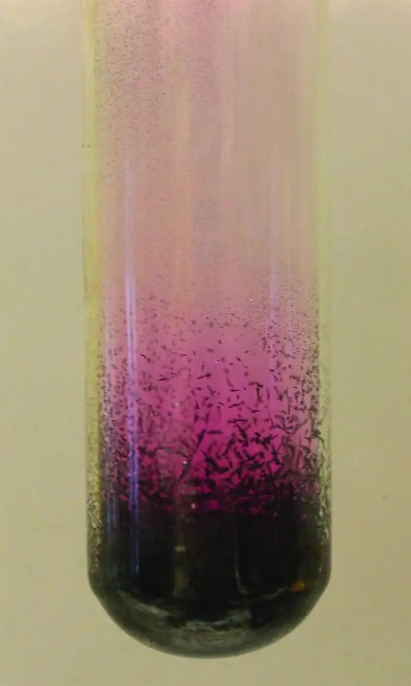
Like vaporization, the process of sublimation requires an input of energy to overcome intermolecular attractions. The enthalpy of sublimation, ΔHsub, is the energy required to convert one mole of a substance from the solid to the gaseous state. For example, the sublimation of carbon dioxide is represented by:
Likewise, the enthalpy change for the reverse process of deposition is equal in magnitude but opposite in sign to that for sublimation:
Consider the extent to which intermolecular attractions must be overcome to achieve a given phase transition. Converting a solid into a liquid requires that these attractions be only partially overcome; transition to the gaseous state requires that they be completely overcome. As a result, the enthalpy of fusion for a substance is less than its enthalpy of vaporization. This same logic can be used to derive an approximate relation between the enthalpies of all phase changes for a given substance. Though not an entirely accurate description, sublimation may be conveniently modeled as a sequential two-step process of melting followed by vaporization in order to apply Hess’s Law. Viewed in this manner, the enthalpy of sublimation for a substance may be estimated as the sum of its enthalpies of fusion and vaporization, as illustrated in Figure 10.28. For example:
![A diagram is shown with a vertical line drawn on the left side and labeled “Energy” and three horizontal lines drawn near the bottom, lower third and top of the diagram. These three lines are labeled, from bottom to top, “Solid,” “Liquid” and “Gas.” Near the middle of the diagram, a vertical, upward-facing arrow is drawn from the solid line to the gas line and labeled “Sublimation, delta sign, H, subscript sub.” To the right of this arrow is a second vertical, upward-facing arrow that is drawn from the solid line to the liquid line and labeled “Fusion, delta sign, H, subscript fus.” Above the second arrow is a third arrow drawn from the liquid line to the gas line and labeled, “Vaporization, delta sign, H, subscript vap.”](img/cnx-chem-10-03-phasechng.webp)
Heating and Cooling Curves¶
In the chapter on thermochemistry, the relation between the amount of heat absorbed or released by a substance, q, and its accompanying temperature change, ΔT, was introduced:
where m is the mass of the substance and c is its specific heat. The relation applies to matter being heated or cooled, but not undergoing a change in state. When a substance being heated or cooled reaches a temperature corresponding to one of its phase transitions, further gain or loss of heat is a result of diminishing or enhancing intermolecular attractions, instead of increasing or decreasing molecular kinetic energies. While a substance is undergoing a change in state, its temperature remains constant. Figure 10.29 shows a typical heating curve.
Consider the example of heating a pot of water to boiling. A stove burner will supply heat at a roughly constant rate; initially, this heat serves to increase the water’s temperature. When the water reaches its boiling point, the temperature remains constant despite the continued input of heat from the stove burner. This same temperature is maintained by the water as long as it is boiling. If the burner setting is increased to provide heat at a greater rate, the water temperature does not rise, but instead the boiling becomes more vigorous (rapid). This behavior is observed for other phase transitions as well: For example, temperature remains constant while the change of state is in progress.
![A graph is shown where the x-axis is labeled “Amount of heat added” and the y-axis is labeled “Temperature ( degree sign C )” and has values of negative 10 to 100 in increments of 20. A right-facing horizontal arrow extends from point “0, 0” to the right side of the graph. A line graph begins at the lower left of the graph and moves to point “0” on the y-axis. This segment of the line is labeled “H, subscript 2, O ( s ).” The line then flattens and travels horizontally for a small distance. This segment is labeled “Solid begins to melt” on its left side and “All solid melted” on its right side. The line then goes steeply upward in a linear fashion until it hits point “100” on the y-axis. This segment of the line is labeled “H, subscript 2, O,( l ).” The line then flattens and travels horizontally for a moderate distance. This segment is labeled “Liquid begins to boil” on its left side and “All liquid evaporated” on its right side. The line then rises to a point above “100” on the y-axis. This segment of the line is labeled “H, subscript 2, O ( g ).”](img/cnx-chem-10-03-heatcurve.webp)
Example 10.10 Total Heat Needed to Change Temperature and Phase for a Substance
How much heat is required to convert 135 g of ice at −15 °C into water vapor at 120 °C?
Solution
The transition described involves the following steps:
- Heat ice from −15 °C to 0 °C
- Melt ice
- Heat water from 0 °C to 100 °C
- Boil water
- Heat steam from 100 °C to 120 °C
The heat needed to change the temperature of a given substance (with no change in phase) is: q = m \(\times\) c \(\times\) ΔT (see previous chapter on thermochemistry). The heat needed to induce a given change in phase is given by q = n \(\times\) ΔH.
Using these equations with the appropriate values for specific heat of ice, water, and steam, and enthalpies of fusion and vaporization, we have:
Converting the quantities in J to kJ permits them to be summed, yielding the total heat required:
NOTE: The value of ΔHvap at the boiling point of water (40.67 kJ/mol) is used here instead of the value at standard temperature (44.01 kJ/mol).
Check Your Learning
What is the total amount of heat released when 94.0 g water at 80.0 °C cools to form ice at −30.0 °C?
Answer:
68.7 kJ
10.4 Phase Diagrams¶
Learning Objectives
By the end of this section, you will be able to:
- Explain the construction and use of a typical phase diagram
- Use phase diagrams to identify stable phases at given temperatures and pressures, and to describe phase transitions resulting from changes in these properties
- Describe the supercritical fluid phase of matter
In the previous module, the variation of a liquid’s equilibrium vapor pressure with temperature was described. Considering the definition of boiling point, plots of vapor pressure versus temperature represent how the boiling point of the liquid varies with pressure. Also described was the use of heating and cooling curves to determine a substance’s melting (or freezing) point. Making such measurements over a wide range of pressures yields data that may be presented graphically as a phase diagram. A phase diagram combines plots of pressure versus temperature for the liquid-gas, solid-liquid, and solid-gas phase-transition equilibria of a substance. These diagrams indicate the physical states that exist under specific conditions of pressure and temperature, and also provide the pressure dependence of the phase-transition temperatures (melting points, sublimation points, boiling points). A typical phase diagram for a pure substance is shown in Figure 10.30.
![A graph is shown where the x-axis is labeled “Temperature” and the y-axis is labeled “Pressure.” A line extends from the lower left bottom of the graph sharply upward to a point that is a third across the x-axis. A second line begins at the lower third of the first line at a point labeled “triple point” and extends to the upper right corner of the graph where it is labeled “critical point.” The two lines bisect the graph area to create three sections, labeled “solid” near the top left, “liquid” in the top middle and “gas” near the bottom right. A pair of horizontal arrows, one left-facing and labeled “deposition” and one right-facing and labeled” sublimation,” are drawn on top of the bottom section of the first line. A second pair of horizontal arrows, one left-facing and labeled “freezing” and one right-facing and labeled “melting”, are drawn on top of the upper section of the first line. A third pair of horizontal arrows, one left-facing and labeled “condensation” and one right-facing and labeled ”vaporization,” are drawn on top of the middle section of the second line.](img/cnx-chem-10-04-phasedi.webp)
To illustrate the utility of these plots, consider the phase diagram for water shown in Figure 10.31.
![A graph is shown where the x-axis is labeled “Temperature in degrees Celsius” and the y-axis is labeled “Pressure ( k P a ).” A line extends from the origin of the graph which is labeled “A” sharply upward to a point in the bottom third of the diagram labeled “B” where it branches into a line that slants slightly backward until it hits the highest point on the y-axis labeled “D” and a second line that extends to the upper right corner of the graph labeled “C”. C is labeled “Critical point, with a dotted line extending downward to the x-axis labeled 374 degrees Celsius, and another dotted line extending to the y-axis labeled 22,089 k P a. The two lines bisect the graph area to create three sections, labeled “Ice (solid)” near the middle left, “Water (liquid)” in the top middle and “Water vapor (gas)” near the bottom middle. Point B is labeled “Triple point” and has a dotted line extending downward to the x-axis labeled 0.01, and another dotted line extending to the y-axis labeled 0.6. Halfway between points B and C a dotted line extends from the originally discussed line downward to the point 100 degrees Celsius on the x-axis, and another dotted line extends to the y-axis at 101 k P a. Another dotted line extends from this dotted line downward at 0 degrees Celsius.](img/cnx-chem-10-04-h2ophasdi2.webp)
We can use the phase diagram to identify the physical state of a sample of water under specified conditions of pressure and temperature. For example, a pressure of 50 kPa and a temperature of −10 °C correspond to the region of the diagram labeled “ice.” Under these conditions, water exists only as a solid (ice). A pressure of 50 kPa and a temperature of 50 °C correspond to the “water” region—here, water exists only as a liquid. At 25 kPa and 200 °C, water exists only in the gaseous state. Note that on the H2O phase diagram, the pressure and temperature axes are not drawn to a constant scale in order to permit the illustration of several important features as described here.
The curve BC in Figure 10.31 is the plot of vapor pressure versus temperature as described in the previous module of this chapter. This “liquid-vapor” curve separates the liquid and gaseous regions of the phase diagram and provides the boiling point for water at any pressure. For example, at 1 atm, the boiling point is 100 °C. Notice that the liquid-vapor curve terminates at a temperature of 374 °C and a pressure of 218 atm, indicating that water cannot exist as a liquid above this temperature, regardless of the pressure. The physical properties of water under these conditions are intermediate between those of its liquid and gaseous phases. This unique state of matter is called a supercritical fluid, a topic that will be described in the next section of this module.
The solid-vapor curve, labeled AB in Figure 10.31, indicates the temperatures and pressures at which ice and water vapor are in equilibrium. These temperature-pressure data pairs correspond to the sublimation, or deposition, points for water. If we could zoom in on the solid-gas line in Figure 10.31, we would see that ice has a vapor pressure of about 0.20 kPa at −10 °C. Thus, if we place a frozen sample in a vacuum with a pressure less than 0.20 kPa, ice will sublime. This is the basis for the “freeze-drying” process often used to preserve foods, such as the ice cream shown in Figure 10.32.
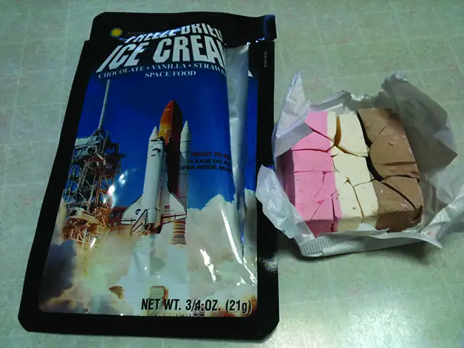
The solid-liquid curve labeled BD shows the temperatures and pressures at which ice and liquid water are in equilibrium, representing the melting/freezing points for water. Note that this curve exhibits a slight negative slope (greatly exaggerated for clarity), indicating that the melting point for water decreases slightly as pressure increases. Water is an unusual substance in this regard, as most substances exhibit an increase in melting point with increasing pressure. This behavior is partly responsible for the movement of glaciers, like the one shown in Figure 10.33. The bottom of a glacier experiences an immense pressure due to its weight that can melt some of the ice, forming a layer of liquid water on which the glacier may more easily slide.
The point of intersection of all three curves is labeled B in Figure 10.31. At the pressure and temperature represented by this point, three phases of water coexist in equilibrium. This temperature-pressure data pair is called the triple point. At pressures lower than the triple point, water cannot exist as a liquid, regardless of the temperature.
Example 10.11 Determining the State of Water
Using the phase diagram for water given in Figure 10.31, determine the state of water at the following temperatures and pressures:
(a) −10 °C and 50 kPa
(b) 25 °C and 90 kPa
(c) 50 °C and 40 kPa
(d) 80 °C and 5 kPa
(e) −10 °C and 0.3 kPa
(f) 50 °C and 0.3 kPa
Solution
Using the phase diagram for water, we can determine that the state of water at each temperature and pressure given are as follows: (a) solid; (b) liquid; (c) liquid; (d) gas; (e) solid; (f) gas.
Check Your Learning
What phase changes can water undergo as the temperature changes if the pressure is held at 0.3 kPa? If the pressure is held at 50 kPa?
Answer:
At 0.3 kPa: \(\text{s}\:\longrightarrow\:\text{g}\) at −58 °C. At 50 kPa: \(\text{s}\:\longrightarrow\:\text{l}\) at 0 °C, l ⟶ g at 78 °C
Consider the phase diagram for carbon dioxide shown in Figure 10.34 as another example. The solid-liquid curve exhibits a positive slope, indicating that the melting point for CO2 increases with pressure as it does for most substances (water being a notable exception as described previously). Notice that the triple point is well above 1 atm, indicating that carbon dioxide cannot exist as a liquid under ambient pressure conditions. Instead, cooling gaseous carbon dioxide at 1 atm results in its deposition into the solid state. Likewise, solid carbon dioxide does not melt at 1 atm pressure but instead sublimes to yield gaseous CO2. Finally, notice that the critical point for carbon dioxide is observed at a relatively modest temperature and pressure in comparison to water.
![A graph is shown where the x-axis is labeled “Temperature ( degree sign, C )” and has values of negative 100 to 100 in increments of 25 and the y-axis is labeled “Pressure ( k P a )” and has values of 10 to 1,000,000. A line extends from the lower left bottom of the graph upward to a point around“27, 9000,” where it ends. The space under this curve is labeled “Gas.” A second line extends in a curve from point around “-55, 500” to “27, 1,000,000.” The area to the left of this line and above the first line is labeled “Solid” while the area to the right is labeled “Liquid.” A section on the graph under the second line and past the point “28” on the x-axis is labeled “S C F.”](img/cnx-chem-10-04-co2phasdi.webp)
Example 10.12 Determining the State of Carbon Dioxide
Using the phase diagram for carbon dioxide shown in Figure 10.34, determine the state of CO2 at the following temperatures and pressures:
(a) −30 °C and 2000 kPa
(b) −90 °C and 1000 kPa
(c) −60 °C and 100 kPa
(d) −40 °C and 1500 kPa
(e) 0 °C and 100 kPa
(f) 20 °C and 100 kPa
Solution
Using the phase diagram for carbon dioxide provided, we can determine that the state of CO2 at each temperature and pressure given are as follows: (a) liquid; (b) solid; (c) gas; (d) liquid; (e) gas; (f) gas.
Check Your Learning
Identify the phase changes that carbon dioxide will undergo as its temperature is increased from −100 °C while holding its pressure constant at 1500 kPa. At 50 kPa. At what approximate temperatures do these phase changes occur?
Answer:
at 1500 kPa: \(\text{s}\:\longrightarrow\:\text{l}\) at −55 °C, \(\text{l}\:\longrightarrow\:\text{g}\) at −10 °C;
at 50 kPa: \(\text{s}\:\longrightarrow\:\text{g}\) at −60 °C
Supercritical Fluids¶
If we place a sample of water in a sealed container at 25 °C, remove the air, and let the vaporization-condensation equilibrium establish itself, we are left with a mixture of liquid water and water vapor at a pressure of 0.03 atm. A distinct boundary between the more dense liquid and the less dense gas is clearly observed. As we increase the temperature, the pressure of the water vapor increases, as described by the liquid-gas curve in the phase diagram for water (Figure 10.31), and a two-phase equilibrium of liquid and gaseous phases remains. At a temperature of 374 °C, the vapor pressure has risen to 218 atm, and any further increase in temperature results in the disappearance of the boundary between liquid and vapor phases. All of the water in the container is now present in a single phase whose physical properties are intermediate between those of the gaseous and liquid states. This phase of matter is called a supercritical fluid, and the temperature and pressure above which this phase exists is the critical point (Figure 10.35). Above its critical temperature, a gas cannot be liquefied no matter how much pressure is applied. The pressure required to liquefy a gas at its critical temperature is called the critical pressure. The critical temperatures and critical pressures of some common substances are given in the following table.
| Substance | Critical Temperature (°C) | Critical Pressure (kPa) |
|---|---|---|
| hydrogen | −240.0 | 1300 |
| nitrogen | −147.2 | 3400 |
| oxygen | −118.9 | 5000 |
| carbon dioxide | 31.1 | 7400 |
| ammonia | 132.4 | 11,300 |
| sulfur dioxide | 157.2 | 7800 |
| water | 374.0 | 22,000 |
![Four photographs are shown where each shows a circular container with a green and red float in each. In the left diagram, the container is half filled with a colorless liquid and the floats sit on the surface of the liquid. In the second photo, the green float is near the top and the red float lies near the bottom of the container. In the third photo, the fluid is darker and the green float sits halfway up the container while the red is sitting at the bottom. In the right photo, the liquid is colorless again and the two floats sit on the surface.](img/cnx-chem-10-04-critfluid.webp)
Link to Learning
Observe the liquid-to-supercritical fluid transition for carbon dioxide.
Like a gas, a supercritical fluid will expand and fill a container, but its density is much greater than typical gas densities, typically being close to those for liquids. Similar to liquids, these fluids are capable of dissolving nonvolatile solutes. They exhibit essentially no surface tension and very low viscosities, however, so they can more effectively penetrate very small openings in a solid mixture and remove soluble components. These properties make supercritical fluids extremely useful solvents for a wide range of applications. For example, supercritical carbon dioxide has become a very popular solvent in the food industry, being used to decaffeinate coffee, remove fats from potato chips, and extract flavor and fragrance compounds from citrus oils. It is nontoxic, relatively inexpensive, and not considered to be a pollutant. After use, the CO2 can be easily recovered by reducing the pressure and collecting the resulting gas.
Example 10.13 The Critical Temperature of Carbon Dioxide
If we shake a carbon dioxide fire extinguisher on a cool day (18 °C), we can hear liquid CO2 sloshing around inside the cylinder. However, the same cylinder appears to contain no liquid on a hot summer day (35 °C). Explain these observations.
Solution
On the cool day, the temperature of the CO2 is below the critical temperature of CO2, 304 K or 31 °C, so liquid CO2 is present in the cylinder. On the hot day, the temperature of the CO2 is greater than its critical temperature of 31 °C. Above this temperature no amount of pressure can liquefy CO2 so no liquid CO2 exists in the fire extinguisher.
Check Your Learning
Ammonia can be liquefied by compression at room temperature; oxygen cannot be liquefied under these conditions. Why do the two gases exhibit different behavior?
Answer:
The critical temperature of ammonia is 405.5 K, which is higher than room temperature. The critical temperature of oxygen is below room temperature; thus oxygen cannot be liquefied at room temperature.
Chemistry in Everyday Life: Decaffeinating Coffee Using Supercritical CO2
Coffee is the world’s second most widely traded commodity, following only petroleum. Across the globe, people love coffee’s aroma and taste. Many of us also depend on one component of coffee—caffeine—to help us get going in the morning or stay alert in the afternoon. But late in the day, coffee’s stimulant effect can keep you from sleeping, so you may choose to drink decaffeinated coffee in the evening.
Since the early 1900s, many methods have been used to decaffeinate coffee. All have advantages and disadvantages, and all depend on the physical and chemical properties of caffeine. Because caffeine is a somewhat polar molecule, it dissolves well in water, a polar liquid. However, since many of the other 400-plus compounds that contribute to coffee’s taste and aroma also dissolve in H2O, hot water decaffeination processes can also remove some of these compounds, adversely affecting the smell and taste of the decaffeinated coffee. Dichloromethane (CH2Cl2) and ethyl acetate (CH3CO2C2H5) have similar polarity to caffeine, and are therefore very effective solvents for caffeine extraction, but both also remove some flavor and aroma components, and their use requires long extraction and cleanup times. Because both of these solvents are toxic, health concerns have been raised regarding the effect of residual solvent remaining in the decaffeinated coffee.
Supercritical fluid extraction using carbon dioxide is now being widely used as a more effective and environmentally friendly decaffeination method (Figure 10.36). At temperatures above 304.2 K and pressures above 7376 kPa, CO2 is a supercritical fluid, with properties of both gas and liquid. Like a gas, it penetrates deep into the coffee beans; like a liquid, it effectively dissolves certain substances. Supercritical carbon dioxide extraction of steamed coffee beans removes 97−99% of the caffeine, leaving coffee’s flavor and aroma compounds intact. Because CO2 is a gas under standard conditions, its removal from the extracted coffee beans is easily accomplished, as is the recovery of the caffeine from the extract. The caffeine recovered from coffee beans via this process is a valuable product that can be used subsequently as an additive to other foods or drugs.
![Two images are shown and labeled “a” and “b.” Image a shows a molecule composed of a five member ring composed of two blue spheres and three black spheres. One of the blue spheres is bonded to a black sphere bonded to three white spheres and one of the black spheres is bonded to a white sphere. The other two black spheres are double bonded together and make up one side of a six-membered ring that is also composed of two more black spheres and two blue spheres, both of which are bonded to a black sphere bonded to three white spheres. The black spheres are each double bonded to red spheres. Image b shows a diagram of two vertical tubes that lie next to one another. The left-hand tube is labeled “Extraction vessel.” A small tube labeled “Soaked beans” leads into the top of the tube and a label at the bottom of the tube reads “Decaffeinated beans.” The right tube is labeled “Absorption vessel.” A tube near the top of this tube is labeled “Water” and another tube leads from the right tube to the left. This tube is labeled with a left-facing arrow and the phrase “supercritical carbon dioxide.” There is a tube leading away from the bottom which is labeled, “Caffeine and water.” There is another tube that leads from the extraction vessel to the absorption vessel which is labeled, “supercritical C O subscript 2 plus caffeine.”](img/cnx-chem-10-04-supcritcof.webp)
10.5 The Solid State of Matter¶
Learning Objectives
By the end of this section, you will be able to:
- Define and describe the bonding and properties of ionic, molecular, metallic, and covalent network crystalline solids
- Describe the main types of crystalline solids: ionic solids, metallic solids, covalent network solids, and molecular solids
- Explain the ways in which crystal defects can occur in a solid
When most liquids are cooled, they eventually freeze and form crystalline solids, solids in which the atoms, ions, or molecules are arranged in a definite repeating pattern. It is also possible for a liquid to freeze before its molecules become arranged in an orderly pattern. The resulting materials are called amorphous solids or noncrystalline solids (or, sometimes, glasses). The particles of such solids lack an ordered internal structure and are randomly arranged (Figure 10.37).
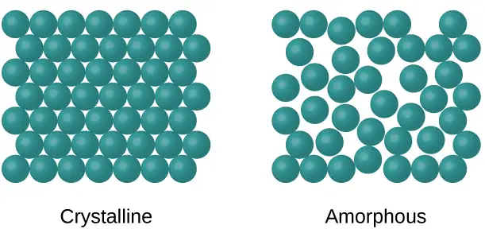
Metals and ionic compounds typically form ordered, crystalline solids. Substances that consist of large molecules, or a mixture of molecules whose movements are more restricted, often form amorphous solids. For examples, candle waxes are amorphous solids composed of large hydrocarbon molecules. Some substances, such as silicon dioxide (shown in Figure 10.38), can form either crystalline or amorphous solids, depending on the conditions under which it is produced. Also, amorphous solids may undergo a transition to the crystalline state under appropriate conditions.
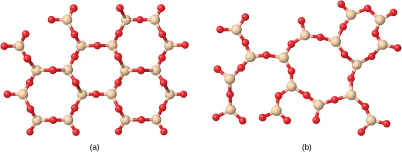
Crystalline solids are generally classified according to the nature of the forces that hold its particles together. These forces are primarily responsible for the physical properties exhibited by the bulk solids. The following sections provide descriptions of the major types of crystalline solids: ionic, metallic, covalent network, and molecular.
Ionic Solids¶
Ionic solids, such as sodium chloride and nickel oxide, are composed of positive and negative ions that are held together by electrostatic attractions, which can be quite strong (Figure 10.39). Many ionic crystals also have high melting points. This is due to the very strong attractions between the ions—in ionic compounds, the attractions between full charges are (much) larger than those between the partial charges in polar molecular compounds. This will be looked at in more detail in a later discussion of lattice energies. Although they are hard, they also tend to be brittle, and they shatter rather than bend. Ionic solids do not conduct electricity; however, they do conduct when molten or dissolved because their ions are free to move. Many simple compounds formed by the reaction of a metallic element with a nonmetallic element are ionic.
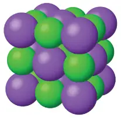
Metallic Solids¶
Metallic solids such as crystals of copper, aluminum, and iron are formed by metal atoms (Figure 10.40). The structure of metallic crystals is often described as a uniform distribution of atomic nuclei within a “sea” of delocalized electrons. The atoms within such a metallic solid are held together by a unique force known as metallic bonding that gives rise to many useful and varied bulk properties. All exhibit high thermal and electrical conductivity, metallic luster, and malleability. Many are very hard and quite strong. Because of their malleability (the ability to deform under pressure or hammering), they do not shatter and, therefore, make useful construction materials. The melting points of the metals vary widely. Mercury is a liquid at room temperature, and the alkali metals melt below 200 °C. Several post-transition metals also have low melting points, whereas the transition metals melt at temperatures above 1000 °C. These differences reflect differences in strengths of metallic bonding among the metals.
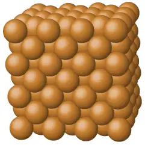
Covalent Network Solid¶
Covalent network solids include crystals of diamond, silicon, some other nonmetals, and some covalent compounds such as silicon dioxide (sand) and silicon carbide (carborundum, the abrasive on sandpaper). Many minerals have networks of covalent bonds. The atoms in these solids are held together by a network of covalent bonds, as shown in Figure 10.41. To break or to melt a covalent network solid, covalent bonds must be broken. Because covalent bonds are relatively strong, covalent network solids are typically characterized by hardness, strength, and high melting points. For example, diamond is one of the hardest substances known and melts above 3500 °C.
![Four pairs of images are shown. In the first pair, a square box containing a black atom bonded to four other black atoms is shown above a structure composed of many black atoms, each bonded to four other black atoms, where one of the upper atoms is labeled “carbon” and the whole structure is labeled “diamond.” In the second pair, a square box containing a white atom bonded to four red atoms is shown above a structure composed of many white atoms, each bonded to four red atoms, where one of the red atoms is labeled “oxygen” and one of the white atoms is labeled “silicon.” The whole structure is labeled “silicon dioxide.” In the third pair, a square box containing a blue atom bonded to four white atoms is shown above a structure composed of many blue atoms, each bonded to four white atoms, where one of the blue atoms is labeled “carbon” and one of the white atoms is labeled “silicon.” The whole structure is labeled “silicon carbide.” In the fourth pair, a square box containing six black atoms bonded into a ring is shown above a structure composed of many rings, arranged into sheets layered one atop the other, where one of the black atoms is labeled “carbon.” The whole structure is labeled “graphite.”](img/cnx-chem-10-05-ntwrksolid.webp)
Molecular Solid¶
Molecular solids, such as ice, sucrose (table sugar), and iodine, as shown in Figure 10.42, are composed of neutral molecules. The strengths of the attractive forces between the units present in different crystals vary widely, as indicated by the melting points of the crystals. Small symmetrical molecules (nonpolar molecules), such as H2, N2, O2, and F2, have weak attractive forces and form molecular solids with very low melting points (below −200 °C). Substances consisting of larger, nonpolar molecules have larger attractive forces and melt at higher temperatures. Molecular solids composed of molecules with permanent dipole moments (polar molecules) melt at still higher temperatures. Examples include ice (melting point, 0 °C) and table sugar (melting point, 185 °C).
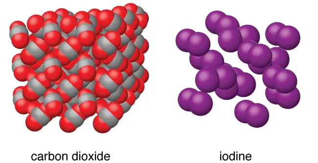
Properties of Solids¶
A crystalline solid, like those listed in Table 10.4, has a precise melting temperature because each atom or molecule of the same type is held in place with the same forces or energy. Thus, the attractions between the units that make up the crystal all have the same strength and all require the same amount of energy to be broken. The gradual softening of an amorphous material differs dramatically from the distinct melting of a crystalline solid. This results from the structural nonequivalence of the molecules in the amorphous solid. Some forces are weaker than others, and when an amorphous material is heated, the weakest intermolecular attractions break first. As the temperature is increased further, the stronger attractions are broken. Thus amorphous materials soften over a range of temperatures.
Table 10.4
| Types of Crystalline Solids and Their Properties | ||||
|---|---|---|---|---|
| Type of Solid | Type of Particles | Type of Attractions | Properties | Examples |
| ionic | ions | ionic bonds | hard, brittle, conducts electricity as a liquid but not as a solid, high to very high melting points | NaCl, Al2O3 |
| metallic | atoms of electropositive elements | metallic bonds | shiny, malleable, ductile, conducts heat and electricity well, variable hardness and melting temperature | Cu, Fe, Ti, Pb, U |
| covalent network | atoms of electronegative elements | covalent bonds | very hard, not conductive, very high melting points | C (diamond), SiO2, SiC |
| molecular | molecules (or atoms) | IMFs | variable hardness, variable brittleness, not conductive, low melting points | H2O, CO2, I2, C12H22O11 |
How Sciences Interconnect: Graphene: Material of the Future
Carbon is an essential element in our world. The unique properties of carbon atoms allow the existence of carbon-based life forms such as ourselves. Carbon forms a huge variety of substances that we use on a daily basis, including those shown in Figure 10.43. You may be familiar with diamond and graphite, the two most common allotropes of carbon. (Allotropes are different structural forms of the same element.) Diamond is one of the hardest-known substances, whereas graphite is soft enough to be used as pencil lead. These very different properties stem from the different arrangements of the carbon atoms in the different allotropes.
![Three pairs of images are shown, each composed of a photo and a diagram. In the first pair, the photo shows a close-up view of a colorless, multi-faceted crystal and the diagram shows many gray spheres bonded together in a net-like structure. The caption below this pair reads “diamond.” In the second pair, the photo shows a rough textured, dark gray solid while the image shows four horizontal sheets, composed of interlocking black spheres, lying atop one another. This pair has a caption that reads “graphite.” The third pair shows a photo of twelve black hexagons on a yellow background where two of the hexagons are encircled by a gray border and a caption of “1.4 times 10, superscript negative 10, m, Distance between center of atoms” and an image of many black hexagons evenly arranged on a yellow background. The caption below this pair of images reads “Graphite surface.”](img/cnx-chem-10-05-carbon.webp)
You may be less familiar with a recently discovered form of carbon: graphene. Graphene was first isolated in 2004 by using tape to peel off thinner and thinner layers from graphite. It is essentially a single sheet (one atom thick) of graphite. Graphene, illustrated in Figure 10.44, is not only strong and lightweight, but it is also an excellent conductor of electricity and heat. These properties may prove very useful in a wide range of applications, such as vastly improved computer chips and circuits, better batteries and solar cells, and stronger and lighter structural materials. The 2010 Nobel Prize in Physics was awarded to Andre Geim and Konstantin Novoselov for their pioneering work with graphene.

Crystal Defects¶
In a crystalline solid, the atoms, ions, or molecules are arranged in a definite repeating pattern, but occasional defects may occur in the pattern. Several types of defects are known, as illustrated in Figure 10.45. Vacancies are defects that occur when positions that should contain atoms or ions are vacant. Less commonly, some atoms or ions in a crystal may occupy positions, called interstitial sites, located between the regular positions for atoms. Other distortions are found in impure crystals, as, for example, when the cations, anions, or molecules of the impurity are too large to fit into the regular positions without distorting the structure. Trace amounts of impurities are sometimes added to a crystal (a process known as doping) in order to create defects in the structure that yield desirable changes in its properties. For example, silicon crystals are doped with varying amounts of different elements to yield suitable electrical properties for their use in the manufacture of semiconductors and computer chips.
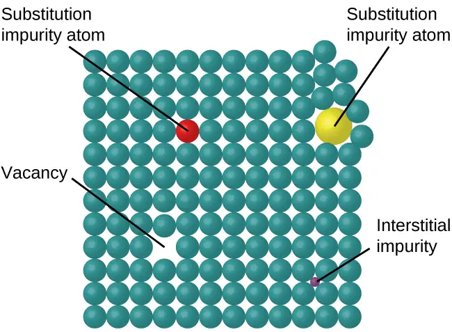
10.6 Lattice Structures in Crystalline Solids¶
Learning Objectives
By the end of this section, you will be able to:
- Describe the arrangement of atoms and ions in crystalline structures
- Compute ionic radii using unit cell dimensions
- Explain the use of X-ray diffraction measurements in determining crystalline structures
Over 90% of naturally occurring and man-made solids are crystalline. Most solids form with a regular arrangement of their particles because the overall attractive interactions between particles are maximized, and the total intermolecular energy is minimized, when the particles pack in the most efficient manner. The regular arrangement at an atomic level is often reflected at a macroscopic level. In this module, we will explore some of the details about the structures of metallic and ionic crystalline solids, and learn how these structures are determined experimentally.
The Structures of Metals¶
We will begin our discussion of crystalline solids by considering elemental metals, which are relatively simple because each contains only one type of atom. A pure metal is a crystalline solid with metal atoms packed closely together in a repeating pattern. Some of the properties of metals in general, such as their malleability and ductility, are largely due to having identical atoms arranged in a regular pattern. The different properties of one metal compared to another partially depend on the sizes of their atoms and the specifics of their spatial arrangements. We will explore the similarities and differences of four of the most common metal crystal geometries in the sections that follow.
Unit Cells of Metals¶
The structure of a crystalline solid, whether a metal or not, is best described by considering its simplest repeating unit, which is referred to as its unit cell. The unit cell consists of lattice points that represent the locations of atoms or ions. The entire structure then consists of this unit cell repeating in three dimensions, as illustrated in Figure 10.46.
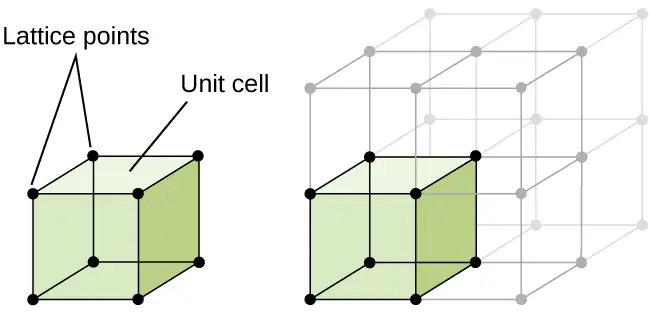
Let us begin our investigation of crystal lattice structure and unit cells with the most straightforward structure and the most basic unit cell. To visualize this, imagine taking a large number of identical spheres, such as tennis balls, and arranging them uniformly in a container. The simplest way to do this would be to make layers in which the spheres in one layer are directly above those in the layer below, as illustrated in Figure 10.47. This arrangement is called simple cubic structure, and the unit cell is called the simple cubic unit cell or primitive cubic unit cell.
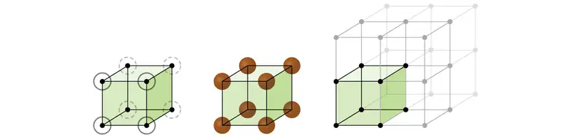
In a simple cubic structure, the spheres are not packed as closely as they could be, and they only “fill” about 52% of the volume of the container. This is a relatively inefficient arrangement, and only one metal (polonium, Po) crystallizes in a simple cubic structure. As shown in Figure 10.48, a solid with this type of arrangement consists of planes (or layers) in which each atom contacts only the four nearest neighbors in its layer; one atom directly above it in the layer above; and one atom directly below it in the layer below. The number of other particles that each particle in a crystalline solid contacts is known as its coordination number. For a polonium atom in a simple cubic array, the coordination number is, therefore, six.
![A diagram of two images is shown. In the first image, eight stacked cubes that make up one large cube are shown. Three lines that run from top to bottom, front to back and sided to side in the middle of the structure are shaded darker than the rest of the lines. The second image shows the same set of cubes, but this time spheres at the end of each line are numbered; the horizontal line that goes left to right is labeled with a “2” and a “5,” the vertical line is labeled with a “1” and a “6” and the line that goes horizontally front to back is labeled with a “3” and a “4.”](img/cnx-chem-10-06-simplecub2.webp)
In a simple cubic lattice, the unit cell that repeats in all directions is a cube defined by the centers of eight atoms, as shown in Figure 10.49. Atoms at adjacent corners of this unit cell contact each other, so the edge length of this cell is equal to two atomic radii, or one atomic diameter. A cubic unit cell contains only the parts of these atoms that are within it. Since an atom at a corner of a simple cubic unit cell is contained by a total of eight unit cells, only one-eighth of that atom is within a specific unit cell. And since each simple cubic unit cell has one atom at each of its eight “corners,” there is \(8\:\times\:\frac{1}{8}\:=1\) atom within one simple cubic unit cell.
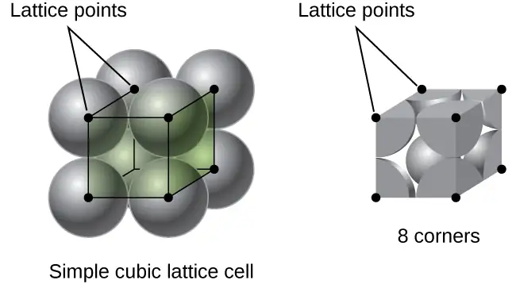
Example 10.14 Calculation of Atomic Radius and Density for Metals, Part 1
The edge length of the unit cell of alpha polonium is 336 pm.
(a) Determine the radius of a polonium atom.
(b) Determine the density of alpha polonium.
Solution
Alpha polonium crystallizes in a simple cubic unit cell:
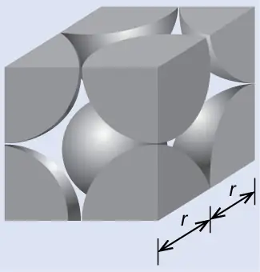
(a) Two adjacent Po atoms contact each other, so the edge length of this cell is equal to two Po atomic radii: l = 2r. Therefore, the radius of Po is \(r\:=\:\frac{l}{2}\:=\:\frac{\text{336 pm}}{2}\:=\text{168 pm}.\)
(b) Density is given by \(\text{density}\:=\:\frac{\text{mass}}{\text{volume}}.\) The density of polonium can be found by determining the density of its unit cell (the mass contained within a unit cell divided by the volume of the unit cell). Since a Po unit cell contains one-eighth of a Po atom at each of its eight corners, a unit cell contains one Po atom.
The mass of a Po unit cell can be found by:
The volume of a Po unit cell can be found by:
(Note that the edge length was converted from pm to cm to get the usual volume units for density.)
Therefore, the density of \(\text{Po}=\:\frac{3.471\:\times\:{10}^{-22}\:\text{g}}{3.79\:\times\:{10}^{-23}\:\text{cm}^{3}}\:=\text{9.16 g/cm}^{3}\)
Check Your Learning
The edge length of the unit cell for nickel is 0.3524 nm. The density of Ni is 8.90 g/cm3. Does nickel crystallize in a simple cubic structure? Explain.
Answer:
No. If Ni was simple cubic, its density would be given by:
\(\text{1 Ni atom}\:\times\:\frac{\text{1 mol Ni}}{6.022\:\times\:{10}^{23}\:\text{Ni atoms}}\:\times\:\frac{58.693\:\text{g}}{\text{1 mol Ni}}\:=9.746\:\times\:{10}^{-23}\:\text{g}\)
\(V=l^{3}={(3.524\:\times\:{10}^{-8}\:\text{cm})}^{3}=4.376\:\times\:{10}^{-23}\:\text{cm}^{3}\)
Then the density of Ni would be \(=\:\frac{9.746\:\times\:{10}^{-23}\:\text{g}}{4.376\:\times\:{10}^{-23}\:\text{cm}^{3}}\:=\text{2.23 g/cm}^{3}\)
Since the actual density of Ni is not close to this, Ni does not form a simple cubic structure.
Most metal crystals are one of the four major types of unit cells. For now, we will focus on the three cubic unit cells: simple cubic (which we have already seen), body-centered cubic unit cell, and face-centered cubic unit cell—all of which are illustrated in Figure 10.50. (Note that there are actually seven different lattice systems, some of which have more than one type of lattice, for a total of 14 different types of unit cells. We leave the more complicated geometries for later in this module.)
![Three pairs of images are shown. The first three images are in a row and are labeled “Lattice point locations” while the second three images are in a row labeled “Cubic unit cells.” The first image in the top row shows a cube with black dots at each corner while the first image in the second row is composed of eight spheres that are stacked together to form a cube and dots at the center of each sphere are connected to form a cube shape. The name under this image reads “Simple cubic.” The second image in the top row shows a cube with black dots at each corner and a red dot in the center while the second image in the second row is composed of eight spheres that are stacked together to form a cube with one sphere in the center of the cube and dots at the center of each corner sphere connected to form a cube shape. The name under this image reads “Body-centered cubic.” The third image in the top row shows a cube with black dots at each corner and red dots in the center of each face while the third image in the second row is composed of eight spheres that are stacked together to form a cube with six more spheres located in the center of each face of the cube. Dots at the center of each corner sphere are connected to form a cube shape. The name under this image reads “Face-centered cubic.”](img/cnx-chem-10-06-cubuntcll.webp)
Some metals crystallize in an arrangement that has a cubic unit cell with atoms at all of the corners and an atom in the center, as shown in Figure 10.51. This is called a body-centered cubic (BCC) solid. Atoms in the corners of a BCC unit cell do not contact each other but contact the atom in the center. A BCC unit cell contains two atoms: one-eighth of an atom at each of the eight corners \((8\:\times\:\frac{1}{8}\:=\:1\) atom from the corners) plus one atom from the center. Any atom in this structure touches four atoms in the layer above it and four atoms in the layer below it. Thus, an atom in a BCC structure has a coordination number of eight.
![Three images are shown. The first image shows a cube with black dots at each corner and a red dot in the center while the second image is composed of eight spheres that are stacked together to form a cube with one sphere in the center of the cube and dots at the center of each corner sphere connected to form a cube shape. The name under this image reads “Body-centered cubic structure.” The third image is the same as the second, but only shows the portions of the spheres that lie inside the cube shape.](img/cnx-chem-10-06-bdycntrdcb.webp)
Atoms in BCC arrangements are much more efficiently packed than in a simple cubic structure, occupying about 68% of the total volume. Isomorphous metals with a BCC structure include K, Ba, Cr, Mo, W, and Fe at room temperature. (Elements or compounds that crystallize with the same structure are said to be isomorphous.)
Many other metals, such as aluminum, copper, and lead, crystallize in an arrangement that has a cubic unit cell with atoms at all of the corners and at the centers of each face, as illustrated in Figure 10.52. This arrangement is called a face-centered cubic (FCC) solid. A FCC unit cell contains four atoms: one-eighth of an atom at each of the eight corners \((8\:\times\:\frac{1}{8}\:=1\) atom from the corners) and one-half of an atom on each of the six faces \((6\:\times\:\frac{1}{2}\:=3\) atoms from the faces). The atoms at the corners touch the atoms in the centers of the adjacent faces along the face diagonals of the cube. Because the atoms are on identical lattice points, they have identical environments.
![Three images are shown. The first image shows a cube with black dots at each corner and red dots in the center of each face of the cube while the second image is composed of eight spheres that are stacked together to form a cube with six more spheres, one located on each face of the structure. Dots at the center of each corner sphere are connected to form a cube shape. The name under this image reads “Face-centered cubic structure.” The third image is the same as the second, but only shows the portions of the spheres that lie inside the cube shape.](img/cnx-chem-10-06-fccntrdcbc.webp)
Atoms in an FCC arrangement are packed as closely together as possible, with atoms occupying 74% of the volume. This structure is also called cubic closest packing (CCP). In CCP, there are three repeating layers of hexagonally arranged atoms. Each atom contacts six atoms in its own layer, three in the layer above, and three in the layer below. In this arrangement, each atom touches 12 near neighbors, and therefore has a coordination number of 12. The fact that FCC and CCP arrangements are equivalent may not be immediately obvious, but why they are actually the same structure is illustrated in Figure 10.53.
![Three images are shown. In the first image, a side view shows a layer of blue spheres, labeled “C” stacked on top of, and sitting in between the gaps in a second layer that is composed of green spheres, labeled “B,” which are sitting atop a purple layer of spheres labeled “A.” A label below this image reads “Side view.” The second image shows a top view of the same layers of spheres, where the top layer is “C,” the second layer is “B” and the lowest layer is “C.” This image is labeled “Top view” and written under this is the phrase “Cubic closest packed structure.” The third image shows an upper view of the side of a cube composed of two sets of the repeating layers shown in the other images. The layers are arranged “C, B, A, C, B, A, C” and the phrase written under this image reads “Rotated view.”](img/cnx-chem-10-06-cbccltpckd.webp)
Because closer packing maximizes the overall attractions between atoms and minimizes the total intermolecular energy, the atoms in most metals pack in this manner. We find two types of closest packing in simple metallic crystalline structures: CCP, which we have already encountered, and hexagonal closest packing (HCP) shown in Figure 10.54. Both consist of repeating layers of hexagonally arranged atoms. In both types, a second layer (B) is placed on the first layer (A) so that each atom in the second layer is in contact with three atoms in the first layer. The third layer is positioned in one of two ways. In HCP, atoms in the third layer are directly above atoms in the first layer (i.e., the third layer is also type A), and the stacking consists of alternating type A and type B close-packed layers (i.e., ABABAB⋯). In CCP, atoms in the third layer are not above atoms in either of the first two layers (i.e., the third layer is type C), and the stacking consists of alternating type A, type B, and type C close-packed layers (i.e., ABCABCABC⋯). About two–thirds of all metals crystallize in closest-packed arrays with coordination numbers of 12. Metals that crystallize in an HCP structure include Cd, Co, Li, Mg, Na, and Zn, and metals that crystallize in a CCP structure include Ag, Al, Ca, Cu, Ni, Pb, and Pt.
![Two images are shown. The first image, labeled “Hexagonal closest packed,” shows seven green spheres arranged in a circular sheet lying atop another sheet that is the same except the spheres are purple. The second sheet is offset just a bit so that the spheres of the top sheet lie in the grooves of the second sheet. Two more alternating green and purple layers of spheres lie below the first pair. The second image shows seven blue spheres, labeled “Layer C,” arranged in a circular sheet laying atop another sheet, labeled “Layer B” that is the same except the spheres are green. The second sheet is offset just a bit so that the spheres of the top sheet lie in the grooves of the second sheet. Two more alternating purple and then blue layers of spheres lie below the first pair. The purple layer is labeled “Layer A” and the phrase written below this image reads “Cubic closest packed.”](img/cnx-chem-10-06-clstpckng2.webp)
Example 10.15 Calculation of Atomic Radius and Density for Metals, Part 2
Calcium crystallizes in a face-centered cubic structure. The edge length of its unit cell is 558.8 pm.
(a) What is the atomic radius of Ca in this structure?
(b) Calculate the density of Ca.
Solution
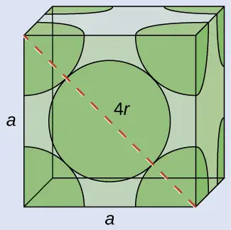
(a) In an FCC structure, Ca atoms contact each other across the diagonal of the face, so the length of the diagonal is equal to four Ca atomic radii (d = 4r). Two adjacent edges and the diagonal of the face form a right triangle, with the length of each side equal to 558.8 pm and the length of the hypotenuse equal to four Ca atomic radii:
Solving this gives \(r\:=\:\sqrt{\frac{{(558.8\:\text{pm})}^{2}+{(558.8\:\text{pm})}^{2}}{16}}\:=\text{197.6 pm for a Ca radius}.\)
(b) Density is given by \(\text{density}\:=\:\frac{\text{mass}}{\text{volume}}.\) The density of calcium can be found by determining the density of its unit cell: for example, the mass contained within a unit cell divided by the volume of the unit cell. A face-centered Ca unit cell has one-eighth of an atom at each of the eight corners \((8\:\times\:\frac{1}{8}\:=1\) atom) and one-half of an atom on each of the six faces (\(6\:\times\:\frac{1}{2}\:=3\) atoms), for a total of four atoms in the unit cell.
The mass of the unit cell can be found by:
The volume of a Ca unit cell can be found by:
(Note that the edge length was converted from pm to cm to get the usual volume units for density.)
Then, the density of \(\text{Ca}\:=\:\frac{2.662\:\times\:{10}^{-22}\:\text{g}}{1.745\:\times\:{10}^{-22}\:\text{cm}^{3}}\:=\text{1.53 g/cm}^{3}\)
Check Your Learning
Silver crystallizes in an FCC structure. The edge length of its unit cell is 409 pm.
(a) What is the atomic radius of Ag in this structure?
(b) Calculate the density of Ag.
Answer:
(a) 144 pm; (b) 10.5 g/cm3
In general, a unit cell is defined by the lengths of three axes (a, b, and c) and the angles (α, β, and γ) between them, as illustrated in Figure 10.55. The axes are defined as being the lengths between points in the space lattice. Consequently, unit cell axes join points with identical environments.
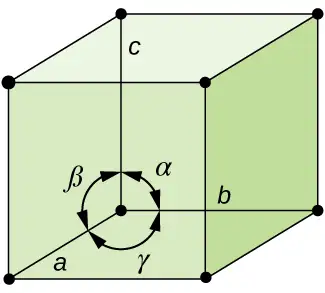
There are seven different lattice systems, some of which have more than one type of lattice, for a total of fourteen different unit cells, which have the shapes shown in Figure 10.56.
![A table is composed of two columns and eight rows. The header row reads “System / Axes / Angles” and “Unit Cells .” The first column reads “Cubic, a equals b equals c, alpha equals beta equals gamma equals 90 degrees,” “Tetragonal, a equals b does not equal c, alpha equals beta equals gamma equals 90 degrees,” “Orthorhombic, a does not equal b does not equal c, alpha equals beta equals gamma equals 90 degrees,” “Monoclinic, a does not equal b does not equal c, alpha equals gamma equals 90 degrees, beta does not equal 90 degrees,” “Triclinic, a does not equal b does not equal c, alpha does not equal beta does not equal gamma does not equal 90 degrees,” “Hexagonal, a equals b does not equal c, alpha equals beta equals 90 degrees, gamma equals 120 degrees,” “Rhombohedral, a equals b equals c, alpha equals beta equals gamma does not equal 90 degrees.” The second column is composed of diagrams. The first set of diagrams in the first cell show a cube with spheres at each corner labeled “Simple,” a cube with spheres in each corner and on each face labeled “Face-centered” and a cube with spheres in each corner and one in the center labeled “Body-centered.” The second set of diagrams in the second cell show a vertical rectangle with spheres at each corner labeled “Simple” and a vertical rectangle with spheres in each corner and one in the center labeled “Body-centered.” The third set of diagrams in the third cell show a vertical rectangle with spheres at each corner labeled “Simple,” a vertical rectangle with spheres in each corner and one in the center labeled “Body-centered,” a vertical rectangle with spheres in each corner and one on the top and bottom faces labeled “Base-centered,” and a vertical rectangle with spheres in each corner and one on each face labeled “Face-centered.” The fourth set of diagrams in the fourth cell show a vertical rectangle with spheres at each corner that is slanted to one side labeled “Simple” and a vertical rectangle with spheres in each corner that is slanted to one side and has two spheres in the center is labeled “Body-centered.” The fifth diagrams in the fifth cell show a cube that is slanted with spheres at each corner while the sixth diagram in the sixth cell shows a pair of hexagonal rings that are connected together to form a six-sided shape with spheres at each corner. The seventh diagram in the seventh cell shows a rectangle that is slanted with spheres at each corner.](img/cnx-chem-10-06-crystalsys.webp)
The Structures of Ionic Crystals¶
Ionic crystals consist of two or more different kinds of ions that usually have different sizes. The packing of these ions into a crystal structure is more complex than the packing of metal atoms that are the same size.
Most monatomic ions behave as charged spheres, and their attraction for ions of opposite charge is the same in every direction. Consequently, stable structures for ionic compounds result (1) when ions of one charge are surrounded by as many ions as possible of the opposite charge and (2) when the cations and anions are in contact with each other. Structures are determined by two principal factors: the relative sizes of the ions and the ratio of the numbers of positive and negative ions in the compound.
In simple ionic structures, we usually find the anions, which are normally larger than the cations, arranged in a closest-packed array. (As seen previously, additional electrons attracted to the same nucleus make anions larger and fewer electrons attracted to the same nucleus make cations smaller when compared to the atoms from which they are formed.) The smaller cations commonly occupy one of two types of holes (or interstices) remaining between the anions. The smaller of the holes is found between three anions in one plane and one anion in an adjacent plane. The four anions surrounding this hole are arranged at the corners of a tetrahedron, so the hole is called a tetrahedral hole. The larger type of hole is found at the center of six anions (three in one layer and three in an adjacent layer) located at the corners of an octahedron; this is called an octahedral hole. Figure 10.57 illustrates both of these types of holes.
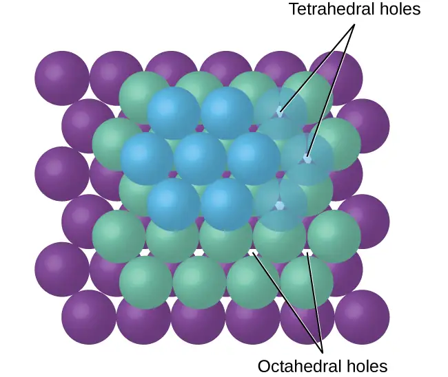
Depending on the relative sizes of the cations and anions, the cations of an ionic compound may occupy tetrahedral or octahedral holes, as illustrated in Figure 10.58. Relatively small cations occupy tetrahedral holes, and larger cations occupy octahedral holes. If the cations are too large to fit into the octahedral holes, the anions may adopt a more open structure, such as a simple cubic array. The larger cations can then occupy the larger cubic holes made possible by the more open spacing.
![A diagram of three images is shown. In the first image, eight stacked cubes, with purple spheres at each corner, that make up one large cube are shown. The bottom left cube is different. It has green spheres at each corner and has four orange and six light purple spheres located on the faces of the cube. Labels below this structure read “Tetrahedral hole” and “Cation radius is about 22.5 to 41.4 percent of the anion radius. In the second image, eight stacked cubes, with alternating orange and green spheres at each corner, make up one large cube that is shown. The bottom left cube has darker lines that connect the spheres together. Labels below this structure read “Octahedral hole” and “Cation radius is about 41.4 to 73.2 percent of the anion radius. In the third image, eight stacked cubes, with purple spheres at each corner and light purple spheres on their interior faces, make up one large cube that is shown. Labels below this structure read “Cubic hole” and “Cation radius is about 73.2 to 100 percent of the anion radius.”](img/cnx-chem-10-06-intionst.webp)
There are two tetrahedral holes for each anion in either an HCP or CCP array of anions. A compound that crystallizes in a closest-packed array of anions with cations in the tetrahedral holes can have a maximum cation:anion ratio of 2:1; all of the tetrahedral holes are filled at this ratio. Examples include Li2O, Na2O, Li2S, and Na2S. Compounds with a ratio of less than 2:1 may also crystallize in a closest-packed array of anions with cations in the tetrahedral holes, if the ionic sizes fit. In these compounds, however, some of the tetrahedral holes remain vacant.
Example 10.16 Occupancy of Tetrahedral Holes
Zinc sulfide is an important industrial source of zinc and is also used as a white pigment in paint. Zinc sulfide crystallizes with zinc ions occupying one-half of the tetrahedral holes in a closest-packed array of sulfide ions. What is the formula of zinc sulfide?
Solution
Because there are two tetrahedral holes per anion (sulfide ion) and one-half of these holes are occupied by zinc ions, there must be \(\frac{1}{2}\;\times\:2,\) or 1, zinc ion per sulfide ion. Thus, the formula is ZnS.
Check Your Learning
Lithium selenide can be described as a closest-packed array of selenide ions with lithium ions in all of the tetrahedral holes. What it the formula of lithium selenide?
Answer:
Li2Se
The ratio of octahedral holes to anions in either an HCP or CCP structure is 1:1. Thus, compounds with cations in octahedral holes in a closest-packed array of anions can have a maximum cation:anion ratio of 1:1. In NiO, MnS, NaCl, and KH, for example, all of the octahedral holes are filled. Ratios of less than 1:1 are observed when some of the octahedral holes remain empty.
Example 10.17 Stoichiometry of Ionic Compounds
Sapphire is aluminum oxide. Aluminum oxide crystallizes with aluminum ions in two-thirds of the octahedral holes in a closest-packed array of oxide ions. What is the formula of aluminum oxide?
Solution
Because there is one octahedral hole per anion (oxide ion) and only two-thirds of these holes are occupied, the ratio of aluminum to oxygen must be \(\frac{2}{3}\):1, which would give \(\text{Al}_{2\text{/}3}\text{O}.\) The simplest whole number ratio is 2:3, so the formula is Al2O3.
Check Your Learning
The white pigment titanium oxide crystallizes with titanium ions in one-half of the octahedral holes in a closest-packed array of oxide ions. What is the formula of titanium oxide?
Answer:
TiO2
In a simple cubic array of anions, there is one cubic hole that can be occupied by a cation for each anion in the array. In CsCl, and in other compounds with the same structure, all of the cubic holes are occupied. Half of the cubic holes are occupied in SrH2, UO2, SrCl2, and CaF2.
Different types of ionic compounds often crystallize in the same structure when the relative sizes of their ions and their stoichiometries (the two principal features that determine structure) are similar.
Unit Cells of Ionic Compounds¶
Many ionic compounds crystallize with cubic unit cells, and we will use these compounds to describe the general features of ionic structures.
When an ionic compound is composed of cations and anions of similar size in a 1:1 ratio, it typically forms a simple cubic structure. Cesium chloride, CsCl, (illustrated in Figure 10.59) is an example of this, with Cs+ and Cl− having radii of 174 pm and 181 pm, respectively. We can think of this as chloride ions forming a simple cubic unit cell, with a cesium ion in the center; or as cesium ions forming a unit cell with a chloride ion in the center; or as simple cubic unit cells formed by Cs+ ions overlapping unit cells formed by Cl− ions. Cesium ions and chloride ions touch along the body diagonals of the unit cells. One cesium ion and one chloride ion are present per unit cell, giving the 1:1 stoichiometry required by the formula for cesium chloride. Note that there is no lattice point in the center of the cell, and CsCl is not a BCC structure because a cesium ion is not identical to a chloride ion.

We have said that the location of lattice points is arbitrary. This is illustrated by an alternate description of the CsCl structure in which the lattice points are located in the centers of the cesium ions. In this description, the cesium ions are located on the lattice points at the corners of the cell, and the chloride ion is located at the center of the cell. The two unit cells are different, but they describe identical structures.
When an ionic compound is composed of a 1:1 ratio of cations and anions that differ significantly in size, it typically crystallizes with an FCC unit cell, like that shown in Figure 10.60. Sodium chloride, NaCl, is an example of this, with Na+ and Cl− having radii of 102 pm and 181 pm, respectively. We can think of this as chloride ions forming an FCC cell, with sodium ions located in the octahedral holes in the middle of the cell edges and in the center of the cell. The sodium and chloride ions touch each other along the cell edges. The unit cell contains four sodium ions and four chloride ions, giving the 1:1 stoichiometry required by the formula, NaCl.
![Three images are shown. The first image shows a cube with black dots at each corner and a red dot in the center. This cube is stacked with seven others that are not colored to form a larger cube. The second image is composed of eight spheres that are grouped together to form a cube with one much larger sphere in the center. The name under this image reads “Body-centered simple cubic structure.” The third image shows seven horizontal layers of alternating purple and green spheres that are slightly offset with one another and form a large cube.](img/cnx-chem-10-07-naclstrctr.webp)
The cubic form of zinc sulfide, zinc blende, also crystallizes in an FCC unit cell, as illustrated in Figure 10.61. This structure contains sulfide ions on the lattice points of an FCC lattice. (The arrangement of sulfide ions is identical to the arrangement of chloride ions in sodium chloride.) The radius of a zinc ion is only about 40% of the radius of a sulfide ion, so these small Zn2+ ions are located in alternating tetrahedral holes, that is, in one half of the tetrahedral holes. There are four zinc ions and four sulfide ions in the unit cell, giving the empirical formula ZnS.
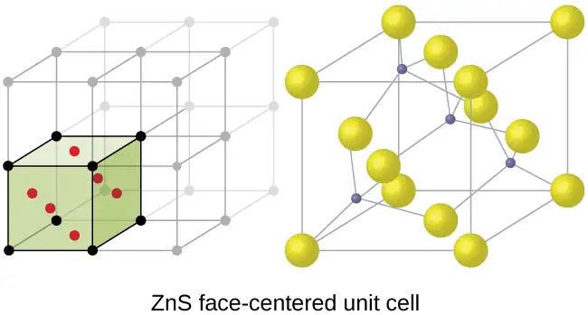
A calcium fluoride unit cell, like that shown in Figure 10.62, is also an FCC unit cell, but in this case, the cations are located on the lattice points; equivalent calcium ions are located on the lattice points of an FCC lattice. All of the tetrahedral sites in the FCC array of calcium ions are occupied by fluoride ions. There are four calcium ions and eight fluoride ions in a unit cell, giving a calcium:fluorine ratio of 1:2, as required by the chemical formula, CaF2. Close examination of Figure 10.62 will reveal a simple cubic array of fluoride ions with calcium ions in one half of the cubic holes. The structure cannot be described in terms of a space lattice of points on the fluoride ions because the fluoride ions do not all have identical environments. The orientation of the four calcium ions about the fluoride ions differs.
![Two images are shown. The first image shows a cube with black dots at each corner and a red dot in the center of each face of the cube. This cube is stacked with seven others that are not colored to form a larger cube. The second image is composed of eight small green spheres that form the corners of a cube with six other small green spheres located in the faces of the cube. Eight larger green spheres are spaced inside the cube and all of the spheres are connect to one another by lines. The name under this image reads “C a F, subscript 2, face-centered unit cell.”](img/cnx-chem-10-07-caf2strctr.webp)
Calculation of Ionic Radii¶
If we know the edge length of a unit cell of an ionic compound and the position of the ions in the cell, we can calculate ionic radii for the ions in the compound if we make assumptions about individual ionic shapes and contacts.
Example 10.18 Calculation of Ionic Radii
The edge length of the unit cell of LiCl (NaCl-like structure, FCC) is 0.514 nm or 5.14 Å. Assuming that the lithium ion is small enough so that the chloride ions are in contact, as in Figure 10.60, calculate the ionic radius for the chloride ion.
Note: The length unit angstrom, Å, is often used to represent atomic-scale dimensions and is equivalent to 10−10 m.
Solution
On the face of a LiCl unit cell, chloride ions contact each other across the diagonal of the face:
![Three images are shown. The first shows a cube of alternating green and purple spheres. A smaller cube within that cube is outlined and a larger version of it appears next. This figure is a grey cube that appears to be made up of spheres. There are small spaces between each sphere. There is a right triangle outlined in this cube and a larger version of it appears next. This right triangle has two sides labeled “a,” and the hypotenuse, which spans two half-circles and one full one is labeled, “r, 2 r, and r.”](img/cnx-chem-10-06-liclstrctr.webp)
Drawing a right triangle on the face of the unit cell, we see that the length of the diagonal is equal to four chloride radii (one radius from each corner chloride and one diameter—which equals two radii—from the chloride ion in the center of the face), so d = 4r. From the Pythagorean theorem, we have:
which yields:
Solving this gives:
Check Your Learning
The edge length of the unit cell of KCl (NaCl-like structure, FCC) is 6.28 Å. Assuming anion-cation contact along the cell edge, calculate the radius of the potassium ion. The radius of the chloride ion is 1.82 Å.
Answer:
The radius of the potassium ion is 1.33 Å.
It is important to realize that values for ionic radii calculated from the edge lengths of unit cells depend on numerous assumptions, such as a perfect spherical shape for ions, which are approximations at best. Hence, such calculated values are themselves approximate and comparisons cannot be pushed too far. Nevertheless, this method has proved useful for calculating ionic radii from experimental measurements such as X-ray crystallographic determinations.
X-Ray Crystallography¶
The size of the unit cell and the arrangement of atoms in a crystal may be determined from measurements of the diffraction of X-rays by the crystal, termed X-ray crystallography. Diffraction is the change in the direction of travel experienced by an electromagnetic wave when it encounters a physical barrier whose dimensions are comparable to those of the wavelength of the light. X-rays are electromagnetic radiation with wavelengths about as long as the distance between neighboring atoms in crystals (on the order of a few Å).
When a beam of monochromatic X-rays strikes a crystal, its rays are scattered in all directions by the atoms within the crystal. When scattered waves traveling in the same direction encounter one another, they undergo interference, a process by which the waves combine to yield either an increase or a decrease in amplitude (intensity) depending upon the extent to which the combining waves’ maxima are separated (see Figure 10.63).
![A pair of images is shown that has four sections. In the first section, two sinusoidal waves are shown, one drawn above the other, and a section from the top of one curve to the top of the next curve is labeled “lambda.” The curves align with one another. The phrase below this reads “Constructive interference.” A right facing arrow leads from the first section to the second, which shows one larger sinusoidal curve that has higher and lower peaks and troughs. A section from the top of one curve to the top of the next curve is labeled “lambda” and the phrase below this reads “Maxima and minima reinforce.” In the second section, two sinusoidal waves are shown, one drawn above the other, and a section from the top of one curve to the top of the next curve is labeled “lambda.” The curves do not align with one another. The phrase below this reads “Destructive interference.” A right facing arrow leads from the first section to the second, which shows one flat line. The phrase below this reads “Maxima and minima cancel.”](img/cnx-chem-10-06-condec.webp)
When X-rays of a certain wavelength, λ, are scattered by atoms in adjacent crystal planes separated by a distance, d, they may undergo constructive interference when the difference between the distances traveled by the two waves prior to their combination is an integer factor, n, of the wavelength. This condition is satisfied when the angle of the diffracted beam, θ, is related to the wavelength and interatomic distance by the equation:
This relation is known as the Bragg equation in honor of W. H. Bragg, the English physicist who first explained this phenomenon. Figure 10.64 illustrates two examples of diffracted waves from the same two crystal planes. The figure on the top depicts waves diffracted at the Bragg angle, resulting in constructive interference, while that on the bottom shows diffraction and a different angle that does not satisfy the Bragg condition, resulting in destructive interference.
![Two similar figures are shown. The first figure, labeled “Constructive Interference,” shows two horizontal rows of seven black dots with a line passing through them. The fourth dots of each row have a vertical line connecting them. The distance between these rows is labeled “d.” A beam labeled “Incident beam” descends at an angle labeled “theta” until it hits the line connecting the fourth dots, after which a diffracted beam ascends at the same angle “theta.” A dotted line is drawn across the diffracted beam. The second figure, labeled “Destructive interference,” is very similar, except that the angles “theta” are far more acute, making the slopes of the beams more shallow.](img/cnx-chem-10-06-xrydiff1.webp)
Link to Learning
Visit this site for more details on the Bragg equation and a simulator that allows you to explore the effect of each variable on the intensity of the diffracted wave.
An X-ray diffractometer, such as the one illustrated in Figure 10.65, may be used to measure the angles at which X-rays are diffracted when interacting with a crystal as described earlier. From such measurements, the Bragg equation may be used to compute distances between atoms as demonstrated in the following example exercise.
![A diagram, labeled “a” shows a cube on the left with a channel bored into its right side labeled “X dash ray source.” A beam is leaving from this channel and traveling in a horizontal line toward an oval-shaped, short tube, labeled “Collimator to focus beam” and “X dash ray diffraction,” where it passes through a cube labeled “Crystalline material” and scatters onto a vertical sheet labeled “Imaging surface.” A second diagram, labeled “b,” shows a square sheet with a large dot in the center labeled “X dash ray beam,” that is surrounded by smaller dots arranged in rings and labeled “Diffracted X dash rays.”](img/cnx-chem-10-07-xrydiff2.webp)
Example 10.19 Using the Bragg Equation
In a diffractometer, X-rays with a wavelength of 0.1315 nm were used to produce a diffraction pattern for copper. The first order diffraction (n = 1) occurred at an angle θ = 25.25°. Determine the spacing between the diffracting planes in copper.
Solution
The distance between the planes is found by solving the Bragg equation, nλ = 2d sin θ, for d.
This gives: \(d\:=\:\frac{n\lambda}{2\:\sin\:\theta}\:=\:\frac{1(0.1315\:\text{nm})}{2\:\sin\:(25.25{}^{\circ})}\:=\text{0.154 nm}\)
Check Your Learning
A crystal with spacing between planes equal to 0.394 nm diffracts X-rays with a wavelength of 0.147 nm. What is the angle for the first order diffraction?
Answer:
10.8°
Portrait of a Chemist: X-ray Crystallographer Rosalind Franklin
The discovery of the structure of DNA in 1953 by Francis Crick and James Watson is one of the great achievements in the history of science. They were awarded the 1962 Nobel Prize in Physiology or Medicine, along with Maurice Wilkins, who provided experimental proof of DNA’s structure. British chemist Rosalind Franklin made invaluable contributions to this monumental achievement through her work in measuring X-ray diffraction images of DNA. Early in her career, Franklin’s research on the structure of coals proved helpful to the British war effort. After shifting her focus to biological systems in the early 1950s, Franklin and doctoral student Raymond Gosling discovered that DNA consists of two forms: a long, thin fiber formed when wet (type “B”) and a short, wide fiber formed when dried (type “A”). Her X-ray diffraction images of DNA (Figure 10.66) provided the crucial information that allowed Watson and Crick to confirm that DNA forms a double helix, and to determine details of its size and structure. Franklin also conducted pioneering research on viruses and the RNA that contains their genetic information, uncovering new information that radically changed the body of knowledge in the field. After developing ovarian cancer, Franklin continued to work until her death in 1958 at age 37. Among many posthumous recognitions of her work, the Chicago Medical School of Finch University of Health Sciences changed its name to the Rosalind Franklin University of Medicine and Science in 2004, and adopted an image of her famous X-ray diffraction image of DNA as its official university logo.
Chapter Review¶
Key Terms¶
- adhesive force
- force of attraction between molecules of different chemical identities
- amorphous solid
- (also, noncrystalline solid) solid in which the particles lack an ordered internal structure
- body-centered cubic (BCC) solid
- crystalline structure that has a cubic unit cell with lattice points at the corners and in the center of the cell
- body-centered cubic unit cell
- simplest repeating unit of a body-centered cubic crystal; it is a cube containing lattice points at each corner and in the center of the cube
- boiling point
- temperature at which the vapor pressure of a liquid equals the pressure of the gas above it
- Bragg equation
- equation that relates the angles at which X-rays are diffracted by the atoms within a crystal
- capillary action
- flow of liquid within a porous material due to the attraction of the liquid molecules to the surface of the material and to other liquid molecules
- Clausius-Clapeyron equation
- mathematical relationship between the temperature, vapor pressure, and enthalpy of vaporization for a substance
- cohesive force
- force of attraction between identical molecules
- condensation
- change from a gaseous to a liquid state
- coordination number
- number of atoms closest to any given atom in a crystal or to the central metal atom in a complex
- covalent network solid
- solid whose particles are held together by covalent bonds
- critical point
- temperature and pressure above which a gas cannot be condensed into a liquid
- crystalline solid
- solid in which the particles are arranged in a definite repeating pattern
- cubic closest packing (CCP)
- crystalline structure in which planes of closely packed atoms or ions are stacked as a series of three alternating layers of different relative orientations (ABC)
- deposition
- change from a gaseous state directly to a solid state
- diffraction
- redirection of electromagnetic radiation that occurs when it encounters a physical barrier of appropriate dimensions
- dipole-dipole attraction
- intermolecular attraction between two permanent dipoles
- dispersion force
- (also, London dispersion force) attraction between two rapidly fluctuating, temporary dipoles; significant only when particles are very close together
- dynamic equilibrium
- state of a system in which reciprocal processes are occurring at equal rates
- face-centered cubic (FCC) solid
- crystalline structure consisting of a cubic unit cell with lattice points on the corners and in the center of each face
- face-centered cubic unit cell
- simplest repeating unit of a face-centered cubic crystal; it is a cube containing lattice points at each corner and in the center of each face
- freezing
- change from a liquid state to a solid state
- freezing point
- temperature at which the solid and liquid phases of a substance are in equilibrium; see also melting point
- hexagonal closest packing (HCP)
- crystalline structure in which close packed layers of atoms or ions are stacked as a series of two alternating layers of different relative orientations (AB)
- hole
- (also, interstice) space between atoms within a crystal
- hydrogen bonding
- occurs when exceptionally strong dipoles attract; bonding that exists when hydrogen is bonded to one of the three most electronegative elements: F, O, or N
- induced dipole
- temporary dipole formed when the electrons of an atom or molecule are distorted by the instantaneous dipole of a neighboring atom or molecule
- instantaneous dipole
- temporary dipole that occurs for a brief moment in time when the electrons of an atom or molecule are distributed asymmetrically
- intermolecular force
- noncovalent attractive force between atoms, molecules, and/or ions
- interstitial sites
- spaces between the regular particle positions in any array of atoms or ions
- ionic solid
- solid composed of positive and negative ions held together by strong electrostatic attractions
- isomorphous
- possessing the same crystalline structure
- melting
- change from a solid state to a liquid state
- melting point
- temperature at which the solid and liquid phases of a substance are in equilibrium; see also freezing point
- metallic solid
- solid composed of metal atoms
- molecular solid
- solid composed of neutral molecules held together by intermolecular forces of attraction
- normal boiling point
- temperature at which a liquid’s vapor pressure equals 1 atm (760 torr)
- octahedral hole
- open space in a crystal at the center of six particles located at the corners of an octahedron
- phase diagram
- pressure-temperature graph summarizing conditions under which the phases of a substance can exist
- polarizability
- measure of the ability of a charge to distort a molecule’s charge distribution (electron cloud)
- simple cubic structure
- crystalline structure with a cubic unit cell with lattice points only at the corners
- simple cubic unit cell
- (also, primitive cubic unit cell) unit cell in the simple cubic structure
- space lattice
- all points within a crystal that have identical environments
- sublimation
- change from solid state directly to gaseous state
- supercritical fluid
- substance at a temperature and pressure higher than its critical point; exhibits properties intermediate between those of gaseous and liquid states
- surface tension
- energy required to increase the area, or length, of a liquid surface by a given amount
- tetrahedral hole
- tetrahedral space formed by four atoms or ions in a crystal
- triple point
- temperature and pressure at which three phases of a substance are in equilibrium
- unit cell
- smallest portion of a space lattice that is repeated in three dimensions to form the entire lattice
- vacancy
- defect that occurs when a position that should contain an atom or ion is vacant
- van der Waals force
- attractive or repulsive force between molecules, including dipole-dipole, dipole-induced dipole, and London dispersion forces; does not include forces due to covalent or ionic bonding, or the attraction between ions and molecules
- vapor pressure
- (also, equilibrium vapor pressure) pressure exerted by a vapor in equilibrium with a solid or a liquid at a given temperature
- vaporization
- change from liquid state to gaseous state
- viscosity
- measure of a liquid’s resistance to flow
- X-ray crystallography
- experimental technique for determining distances between atoms in a crystal by measuring the angles at which X-rays are diffracted when passing through the crystal
Key Equations¶
10.2 Properties of Liquids¶
| \(h=\:\frac{2T\:\cos\:\theta}{r\rho g}\) |
10.3 Phase Transitions¶
| \(P=Ae^{-\Delta H_{\text{vap}}\text{/}RT}\) |
| \(\ln\:P=-\frac{\Delta H_{\text{vap}}}{RT}\:+\ln\:A\) |
| \(\ln\:\left( \frac{P_{2}}{P_{1}} \right)\:=\:\frac{\Delta H_{\text{vap}}}{R}\:\left( \frac{1}{T_{1}}\:-\:\frac{1}{T_{2}} \right)\) |
10.6 Lattice Structures in Crystalline Solids¶
| \(n\lambda=2d\:\sin\:\theta\) |
Key Concepts and Summary¶
10.1 Intermolecular Forces¶
The physical properties of condensed matter (liquids and solids) can be explained in terms of the kinetic molecular theory. In a liquid, intermolecular attractive forces hold the molecules in contact, although they still have sufficient KE to move past each other.
Intermolecular attractive forces, collectively referred to as van der Waals forces, are responsible for the behavior of liquids and solids and are electrostatic in nature. Dipole-dipole attractions result from the electrostatic attraction of the partial negative end of one polar molecule for the partial positive end of another. The temporary dipole that results from the motion of the electrons in an atom can induce a dipole in an adjacent atom and give rise to the London dispersion force. London forces increase with increasing molecular size. Hydrogen bonds are a special type of dipole-dipole attraction that results when hydrogen is bonded to one of the three most electronegative elements: F, O, or N.
10.2 Properties of Liquids¶
The intermolecular forces between molecules in the liquid state vary depending upon their chemical identities and result in corresponding variations in various physical properties. Cohesive forces between like molecules are responsible for a liquid’s viscosity (resistance to flow) and surface tension (elasticity of a liquid surface). Adhesive forces between the molecules of a liquid and different molecules composing a surface in contact with the liquid are responsible for phenomena such as surface wetting and capillary rise.
10.3 Phase Transitions¶
Phase transitions are processes that convert matter from one physical state into another. There are six phase transitions between the three phases of matter. Melting, vaporization, and sublimation are all endothermic processes, requiring an input of heat to overcome intermolecular attractions. The reciprocal transitions of freezing, condensation, and deposition are all exothermic processes, involving heat as intermolecular attractive forces are established or strengthened. The temperatures at which phase transitions occur are determined by the relative strengths of intermolecular attractions and are, therefore, dependent on the chemical identity of the substance.
10.4 Phase Diagrams¶
The temperature and pressure conditions at which a substance exists in solid, liquid, and gaseous states are summarized in a phase diagram for that substance. Phase diagrams are combined plots of pressure-temperature equilibrium curves representing the relationships between phase transition temperatures and pressures. The point of intersection of any three curves in a phase diagram represents a substance’s triple point—the temperature and pressure at which three different phases are in equilibrium. At pressures below a solid-liquid-gas triple point, a substance cannot exist in the liquid state, regardless of its temperature. The terminus of the liquid-gas curve represents the substance’s critical point, the pressure and temperature above which a liquid phase cannot exist.
10.5 The Solid State of Matter¶
Some substances form crystalline solids consisting of particles in a very organized structure; others form amorphous (noncrystalline) solids with an internal structure that is not ordered. The main types of crystalline solids are ionic solids, metallic solids, covalent network solids, and molecular solids. The properties of the different kinds of crystalline solids are due to the types of particles of which they consist, the arrangements of the particles, and the strengths of the attractions between them. Because their particles experience identical attractions, crystalline solids have distinct melting temperatures; the particles in amorphous solids experience a range of interactions, so they soften gradually and melt over a range of temperatures. Some crystalline solids have defects in the definite repeating pattern of their particles. These defects (which include vacancies, atoms or ions not in the regular positions, and impurities) change physical properties such as electrical conductivity, which is exploited in the silicon crystals used to manufacture computer chips.
10.6 Lattice Structures in Crystalline Solids¶
The structures of crystalline metals and simple ionic compounds can be described in terms of packing of spheres. Metal atoms can pack in hexagonal closest-packed structures, cubic closest-packed structures, body-centered structures, and simple cubic structures. The anions in simple ionic structures commonly adopt one of these structures, and the cations occupy the spaces remaining between the anions. Small cations usually occupy tetrahedral holes in a closest-packed array of anions. Larger cations usually occupy octahedral holes. Still larger cations can occupy cubic holes in a simple cubic array of anions. The structure of a solid can be described by indicating the size and shape of a unit cell and the contents of the cell. The type of structure and dimensions of the unit cell can be determined by X-ray diffraction measurements.
Exercises¶
10.1 Intermolecular Forces¶
1. In terms of their bulk properties, how do liquids and solids differ? How are they similar?
Answer
Liquids and solids are similar in that they are matter composed of atoms, ions, or molecules. They are incompressible and have similar densities that are both much larger than those of gases. They are different in that liquids have no fixed shape, and solids are rigid.
2. In terms of the kinetic molecular theory, in what ways are liquids similar to solids? In what ways are liquids different from solids?
3. In terms of the kinetic molecular theory, in what ways are liquids similar to gases? In what ways are liquids different from gases?
Answer
They are similar in that the atoms or molecules are free to move from one position to another. They differ in that the particles of a liquid are confined to the shape of the vessel in which they are placed. In contrast, a gas will expand without limit to fill the space into which it is placed.
4. Explain why liquids assume the shape of any container into which they are poured, whereas solids are rigid and retain their shape.
5. What is the evidence that all neutral atoms and molecules exert attractive forces on each other?
Answer
All atoms and molecules will condense into a liquid or solid in which the attractive forces exceed the kinetic energy of the molecules, at sufficiently low temperature.
6. Open the PhET States of Matter Simulation to answer the following questions:
(a) Select the Solid, Liquid, Gas tab. Explore by selecting different substances, heating and cooling the systems, and changing the state. What similarities do you notice between the four substances for each phase (solid, liquid, gas)? What differences do you notice?
(b) For each substance, select each of the states and record the given temperatures. How do the given temperatures for each state correlate with the strengths of their intermolecular attractions? Explain.
(c) Select the Interaction Potential tab, and use the default neon atoms. Move the Ne atom on the right and observe how the potential energy changes. Select the Total Force button, and move the Ne atom as before. When is the total force on each atom attractive and large enough to matter? Then select the Component Forces button, and move the Ne atom. When do the attractive (van der Waals) and repulsive (electron overlap) forces balance? How does this relate to the potential energy versus the distance between atoms graph? Explain.
7. Define the following and give an example of each:
(a) dispersion force
(b) dipole-dipole attraction
(c) hydrogen bond
Answer
(a) Dispersion forces occur as an atom develops a temporary dipole moment when its electrons are distributed asymmetrically about the nucleus. This structure is more prevalent in large atoms such as argon or radon. A second atom can then be distorted by the appearance of the dipole in the first atom. The electrons of the second atom are attracted toward the positive end of the first atom, which sets up a dipole in the second atom. The net result is rapidly fluctuating, temporary dipoles that attract one another (e.g., Ar). (b) A dipole-dipole attraction is a force that results from an electrostatic attraction of the positive end of one polar molecule for the negative end of another polar molecule (e.g., ICI molecules attract one another by dipole-dipole interaction). (c) Hydrogen bonds form whenever a hydrogen atom is bonded to one of the more electronegative atoms, such as a fluorine, oxygen, or nitrogen atom. The electrostatic attraction between the partially positive hydrogen atom in one molecule and the partially negative atom in another molecule gives rise to a strong dipole-dipole interaction called a hydrogen bond (e.g., \(\text{HF}\cdots\text{HF}).\)
8. The types of intermolecular forces in a substance are identical whether it is a solid, a liquid, or a gas. Why then does a substance change phase from a gas to a liquid or to a solid?
9. Why do the boiling points of the noble gases increase in the order He < Ne < Ar < Kr < Xe?
Answer
The London forces typically increase as the number of electrons increase.
10. Neon and HF have approximately the same molecular masses.
(a) Explain why the boiling points of Neon and HF differ.
(b) Compare the change in the boiling points of Ne, Ar, Kr, and Xe with the change of the boiling points of HF, HCl, HBr, and HI, and explain the difference between the changes with increasing atomic or molecular mass.
11. Arrange each of the following sets of compounds in order of increasing boiling point temperature:
(a) HCl, H2O, SiH4
(b) F2, Cl2, Br2
(c) CH4, C2H6, C3H8
(d) O2, NO, N2
Answer
(a) SiH4 < HCl < H2O; (b) F2 < Cl2 < Br2; (c) CH4 < C2H6 < C3H8; (d) N2 < O2 < NO
12. The molecular mass of butanol, C4H9OH, is 74.14; that of ethylene glycol, CH2(OH)CH2OH, is 62.08, yet their boiling points are 117.2 °C and 174 °C, respectively. Explain the reason for the difference.
13. On the basis of intermolecular attractions, explain the differences in the boiling points of n–butane (−1 °C) and chloroethane (12 °C), which have similar molar masses.
Answer
Only rather small dipole-dipole interactions from C-H bonds are available to hold n-butane in the liquid state. Chloroethane, however, has rather large dipole interactions because of the Cl-C bond; the interaction, therefore, is stronger, leading to a higher boiling point.
14. On the basis of dipole moments and/or hydrogen bonding, explain in a qualitative way the differences in the boiling points of acetone (56.2 °C) and 1-propanol (97.4 °C), which have similar molar masses.
15. The melting point of H2O(s) is 0 °C. Would you expect the melting point of H2S(s) to be −85 °C, 0 °C, or 185 °C? Explain your answer.
Answer
−85 °C. Water has stronger hydrogen bonds, so it melts at a higher temperature.
16. Silane (SiH4), phosphine (PH3), and hydrogen sulfide (H2S) melt at −185 °C, −133 °C, and −85 °C, respectively. What does this suggest about the polar character and intermolecular attractions of the three compounds?
17. Explain why a hydrogen bond between two water molecules is weaker than a hydrogen bond between two hydrogen fluoride molecules.
Answer
The hydrogen bond between two hydrogen fluoride molecules is stronger than that between two water molecules because the electronegativity of F is greater than that of O. Consequently, the partial negative charge on F is greater than that on O. The hydrogen bond between the partially positive H and the larger partially negative F will be stronger than that formed between H and O.
18. Under certain conditions, molecules of acetic acid, CH3COOH, form “dimers,” pairs of acetic acid molecules held together by strong intermolecular attractions:
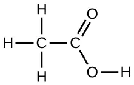
Draw a dimer of acetic acid, showing how two CH3COOH molecules are held together, and stating the type of IMF that is responsible.
19. Proteins are chains of amino acids that can form in a variety of arrangements, one of which is a helix. What kind of IMF is responsible for holding the protein strand in this shape? On the protein image, show the locations of the IMFs that hold the protein together:
![Two turns of a helical structure are shown horizontally. Three Lewis structures are superimposed on the helix. The first shows horizontally stacked dashes next to an oxygen atom, with three dots connecting to a hydrogen atom, and a single dash connecting the hydrogen atom to a nitrogen atom. The second shows a carbon atom double bonded to an oxygen atom, then three dots connecting to a hydrogen atom which is bonded to a nitrogen atom. The third shows a carbon atom double bonded to an oxygen atom with three dots extending to the right of the oxygen atom.](img/cnx-chem-10-01-aminacidch-img.webp)
Answer
H-bonding is the principle IMF holding the protein strands together. The H-bonding is between the \(\text{N}-\text{H}\) and \(\text{C}=\text{O}.\)
20. The density of liquid NH3 is 0.64 g/mL; the density of gaseous NH3 at STP is 0.0007 g/mL. Explain the difference between the densities of these two phases.
21. Identify the intermolecular forces present in the following solids:
(a) CH3CH2OH
(b) CH3CH2CH3
(c) CH3CH2Cl
Answer
(a) hydrogen bonding, dipole-dipole attraction, and dispersion forces; (b) dispersion forces; (c) dipole-dipole attraction and dispersion forces
10.2 Properties of Liquids¶
22. The test tubes shown here contain equal amounts of the specified motor oils. Identical metal spheres were dropped at the same time into each of the tubes, and a brief moment later, the spheres had fallen to the heights indicated in the illustration.
Rank the motor oils in order of increasing viscosity, and explain your reasoning:
![An image of four graduated cylinders sitting on a table labeled “Oil viscosity ( S A E )” is shown. The left-hand cylinder, labeled “20,” is mostly filled with light tan liquid and a metal ball is drawn in the lower fifth of the cylinder, but not on the bottom. The second cylinder, labeled “30,” is mostly filled with light brown liquid and a metal ball is drawn about three-fourths of the way down cylinder. The third cylinder, labeled “40,” is mostly filled with medium brown liquid and a metal ball is drawn halfway down the cylinder. The right-hand cylinder, labeled “50,” is mostly filled with brown liquid and a metal ball is drawn near the top of the liquid in the cylinder.](img/cnx-chem-10-02-testtubeoi-img.webp)
23. Although steel is denser than water, a steel needle or paper clip placed carefully lengthwise on the surface of still water can be made to float. Explain at a molecular level how this is possible.
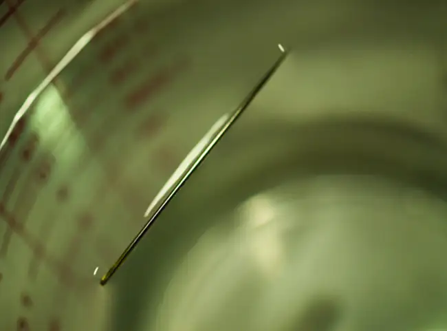
Answer
The water molecules have strong intermolecular forces of hydrogen bonding. The water molecules are thus attracted strongly to one another and exhibit a relatively large surface tension, forming a type of “skin” at its surface. This skin can support a bug or paper clip if gently placed on the water.
24. The surface tension and viscosity values for diethyl ether, acetone, ethanol, and ethylene glycol are shown here.
![This table has four columns and five rows. The first row is a header row, and it labels each column: “Compound,” “Molecule,” “Surface Tension ( m N / m ),” and “Viscosity ( m P a dot s ).” Under the “compound” column are the following: diethyl ether C subscript 2 H subscript 5 O C subscript 2 H subscript 5; acetone C subscript 2 H subscript 5 O C subscript 2 H subscript 5; ethanol C subscript 2 H subscript 5 O H; ethylene glycol C H subscript 2 ( O H ) C H subscript 2 ( O H ). Under the “Molecule” column are ball-and-stick representations of each compound. The first shows two grey spheres bonded together. The first grey sphere is also bonded to three white spheres. The second grey sphere is bonded to two white spheres and a red sphere. The red sphere is bonded to another grey sphere. The grey sphere is bonded to two white spheres and another grey sphere. The last grey sphere is bonded to three white spheres. The second shows three grey spheres bonded tighter. The two grey spheres on the end are each bonded to three white spheres. The grey sphere in the middle is bonded to one red sphere. The third shows two grey spheres bonded together. The first grey sphere is bonded to three white spheres and the second grey sphere is bonded to two white spheres and a red sphere. The red sphere is bonded to a white sphere. The fourth shows two grey spheres bonded together. Each grey sphere is bonded to two white spheres and a red sphere. Each red sphere is also bonded to one white sphere. Under the “Surface Tension ( m N / m )” column are the following: 17, 23, 22 and 48. Under the “Viscosity ( m P a dot s )” column are the following: 0.22, 0.31, 1.07, and 16.1.](img/cnx-chem-10-02-question4-img.webp)
(a) Explain their differences in viscosity in terms of the size and shape of their molecules and their IMFs.
(b) Explain their differences in surface tension in terms of the size and shape of their molecules and their IMFs:
25. You may have heard someone use the figure of speech “slower than molasses in winter” to describe a process that occurs slowly. Explain why this is an apt idiom, using concepts of molecular size and shape, molecular interactions, and the effect of changing temperature.
Answer
Temperature has an effect on intermolecular forces: The higher the temperature, the greater the kinetic energies of the molecules and the greater the extent to which their intermolecular forces are overcome, and so the more fluid (less viscous) the liquid. The lower the temperature, the less the intermolecular forces are overcome, and so the less viscous the liquid.
26. It is often recommended that you let your car engine run idle to warm up before driving, especially on cold winter days. While the benefit of prolonged idling is dubious, it is certainly true that a warm engine is more fuel efficient than a cold one. Explain the reason for this.
27. The surface tension and viscosity of water at several different temperatures are given in this table.
| Water | Surface Tension (mN/m) | Viscosity (mPa s) |
|---|---|---|
| 0 °C | 75.6 | 1.79 |
| 20 °C | 72.8 | 1.00 |
| 60 °C | 66.2 | 0.47 |
| 100 °C | 58.9 | 0.28 |
(a) As temperature increases, what happens to the surface tension of water? Explain why this occurs, in terms of molecular interactions and the effect of changing temperature.
(b) As temperature increases, what happens to the viscosity of water? Explain why this occurs, in terms of molecular interactions and the effect of changing temperature.
Answer
(a) As the water reaches higher temperatures, the increased kinetic energies of its molecules are more effective in overcoming hydrogen bonding, and so its surface tension decreases. Surface tension and intermolecular forces are directly related. (b) The same trend in viscosity is seen as in surface tension, and for the same reason.
28. At 25 °C, how high will water rise in a glass capillary tube with an inner diameter of 0.63 mm? Refer to Example 10.4 for the required information.
29. Water rises in a glass capillary tube to a height of 17 cm. What is the diameter of the capillary tube?
Answer
1.7 \(\times\) 10−4 m
10.3 Phase Transitions¶
30. Heat is added to boiling water. Explain why the temperature of the boiling water does not change. What does change?
31. Heat is added to ice at 0 °C. Explain why the temperature of the ice does not change. What does change?
Answer
The heat is absorbed by the ice, providing the energy required to partially overcome intermolecular attractive forces in the solid and causing a phase transition to liquid water. The solution remains at 0 °C until all the ice is melted. Only the amount of water existing as ice changes until the ice disappears. Then the temperature of the water can rise.
32. What feature characterizes the dynamic equilibrium between a liquid and its vapor in a closed container?
33. Identify two common observations indicating some liquids have sufficient vapor pressures to noticeably evaporate?
Answer
We can see the amount of liquid in an open container decrease and we can smell the vapor of some liquids.
34. Identify two common observations indicating some solids, such as dry ice and mothballs, have vapor pressures sufficient to sublime?
35. What is the relationship between the intermolecular forces in a liquid and its vapor pressure?
Answer
The vapor pressure of a liquid decreases as the strength of its intermolecular forces increases.
36. What is the relationship between the intermolecular forces in a solid and its melting temperature?
37. Why does spilled gasoline evaporate more rapidly on a hot day than on a cold day?
Answer
As the temperature increases, the average kinetic energy of the molecules of gasoline increases and so a greater fraction of molecules have sufficient energy to escape from the liquid than at lower temperatures.
38. Carbon tetrachloride, CCl4, was once used as a dry cleaning solvent, but is no longer used because it is carcinogenic. At 57.8 °C, the vapor pressure of CCl4 is 54.0 kPa, and its enthalpy of vaporization is 33.05 kJ/mol. Use this information to estimate the normal boiling point for CCl4.
39. When is the boiling point of a liquid equal to its normal boiling point?
Answer
They are equal when the pressure of gas above the liquid is exactly 1 atm.
40. How does the boiling of a liquid differ from its evaporation?
41. Use the information in Figure 10.24 to estimate the boiling point of water in Denver when the atmospheric pressure is 83.3 kPa.
Answer
approximately 95 °C
42. A syringe at a temperature of 20 °C is filled with liquid ether in such a way that there is no space for any vapor. If the temperature is kept constant and the plunger is withdrawn to create a volume that can be occupied by vapor, what would be the approximate pressure of the vapor produced?
43. Explain the following observations:
(a) It takes longer to cook an egg in Ft. Davis, Texas (altitude, 5000 feet above sea level) than it does in Boston (at sea level).
(b) Perspiring is a mechanism for cooling the body.
Answer
(a) At 5000 feet, the atmospheric pressure is lower than at sea level, and water will therefore boil at a lower temperature. This lower temperature will cause the physical and chemical changes involved in cooking the egg to proceed more slowly, and a longer time is required to fully cook the egg. (b) As long as the air surrounding the body contains less water vapor than the maximum that air can hold at that temperature, perspiration will evaporate, thereby cooling the body by removing the heat of vaporization required to vaporize the water.
44. The enthalpy of vaporization of water is larger than its enthalpy of fusion. Explain why.
45. Explain why the molar enthalpies of vaporization of the following substances increase in the order CH4 < C2H6 < C3H8, even though the type of IMF (dispersion) is the same.
Answer
Dispersion forces increase with molecular mass or size. As the number of atoms composing the molecules in this homologous series increases, so does the extent of intermolecular attraction via dispersion forces and, consequently, the energy required to overcome these forces and vaporize the liquids.
46. Explain why the enthalpies of vaporization of the following substances increase in the order CH4 < NH3 < H2O, even though all three substances have approximately the same molar mass.
47. The enthalpy of vaporization of CO2(l) is 9.8 kJ/mol. Would you expect the enthalpy of vaporization of CS2(l) to be 28 kJ/mol, 9.8 kJ/mol, or −8.4 kJ/mol? Discuss the plausibility of each of these answers.
Answer
The boiling point of CS2 is higher than that of CO2 partially because of the higher molecular weight of CS2; consequently, the attractive forces are stronger in CS2. It would be expected, therefore, that the heat of vaporization would be greater than that of 9.8 kJ/mol for CO2. A value of 28 kJ/mol would seem reasonable. A value of −8.4 kJ/mol would indicate a release of energy upon vaporization, which is clearly implausible.
48. The hydrogen fluoride molecule, HF, is more polar than a water molecule, H2O (for example, has a greater dipole moment), yet the molar enthalpy of vaporization for liquid hydrogen fluoride is lesser than that for water. Explain.
49. Ethyl chloride (boiling point, 13 °C) is used as a local anesthetic. When the liquid is sprayed on the skin, it cools the skin enough to freeze and numb it. Explain the cooling effect of liquid ethyl chloride.
Answer
The thermal energy (heat) needed to evaporate the liquid is removed from the skin.
50. Which contains the compounds listed correctly in order of increasing boiling points?
(a) N2 < CS2 < H2O < KCl
(b) H2O < N2 < CS2 < KCl
(c) N2 < KCl < CS2 < H2O
(d) CS2 < N2 < KCl < H2O
(e) KCl < H2O < CS2 < N2
51. How much heat is required to convert 422 g of liquid H2O at 23.5 °C into steam at 150 °C?
Answer
1125 kJ
52. Evaporation of sweat requires energy and thus take excess heat away from the body. Some of the water that you drink may eventually be converted into sweat and evaporate. If you drink a 20-ounce bottle of water that had been in the refrigerator at 3.8 °C, how much heat is needed to convert all of that water into sweat and then to vapor? (Note: Your body temperature is 36.6 °C. For the purpose of solving this problem, assume that the thermal properties of sweat are the same as for water.)
53. Titanium tetrachloride, TiCl4, has a melting point of −23.2 °C and has a ΔHfusion = 9.37 kJ/mol.
(a) How much energy is required to melt 263.1 g TiCl4?
(b) For TiCl4, which will likely have the larger magnitude: ΔHfusion or ΔHvaporization? Explain your reasoning.
Answer
(a) 13.0 kJ; (b) It is likely that the heat of vaporization will have a larger magnitude since in the case of vaporization the intermolecular interactions have to be completely overcome, while melting weakens or destroys only some of them.
10.4 Phase Diagrams¶
54. From the phase diagram for water (Figure 10.31), determine the state of water at:
(a) 35 °C and 85 kPa
(b) −15 °C and 40 kPa
(c) −15 °C and 0.1 kPa
(d) 75 °C and 3 kPa
(e) 40 °C and 0.1 kPa
(f) 60 °C and 50 kPa
55. What phase changes will take place when water is subjected to varying pressure at a constant temperature of 0.005 °C? At 40 °C? At −40 °C?
Answer
At low pressures and 0.005 °C, the water is a gas. As the pressure increases to 4.6 torr, the water becomes a solid; as the pressure increases still more, it becomes a liquid. At 40 °C, water at low pressure is a vapor; at pressures higher than about 75 torr, it converts into a liquid. At −40 °C, water goes from a gas to a solid as the pressure increases above very low values.
56. Pressure cookers allow food to cook faster because the higher pressure inside the pressure cooker increases the boiling temperature of water. A particular pressure cooker has a safety valve that is set to vent steam if the pressure exceeds 3.4 atm. What is the approximate maximum temperature that can be reached inside this pressure cooker? Explain your reasoning.
57. From the phase diagram for carbon dioxide in Figure 10.34, determine the state of CO2 at:
(a) 20 °C and 1000 kPa
(b) 10 °C and 2000 kPa
(c) 10 °C and 100 kPa
(d) −40 °C and 500 kPa
(e) −80 °C and 1500 kPa
(f) −80 °C and 10 kPa
Answer
(a) gas; (b) gas; (c) gas; (d) gas; (e) solid; (f) gas
58. Determine the phase changes that carbon dioxide undergoes as pressure is increased at a constant temperature of (a) −50 °C and (b) 50 °C. If the temperature is held at −40 °C? At 20 °C? (See the phase diagram in Figure 10.34.)
59. Consider a cylinder containing a mixture of liquid carbon dioxide in equilibrium with gaseous carbon dioxide at an initial pressure of 65 atm and a temperature of 20 °C. Sketch a plot depicting the change in the cylinder pressure with time as gaseous carbon dioxide is released at constant temperature.
Answer
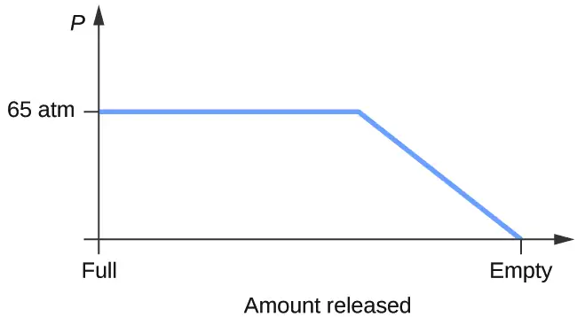
60. Dry ice, CO2(s), does not melt at atmospheric pressure. It sublimes at a temperature of −78 °C. What is the lowest pressure at which CO2(s) will melt to give CO2(l)? At approximately what temperature will this occur? (See Figure 10.34 for the phase diagram.)
61. If a severe storm results in the loss of electricity, it may be necessary to use a clothesline to dry laundry. In many parts of the country in the dead of winter, the clothes will quickly freeze when they are hung on the line. If it does not snow, will they dry anyway? Explain your answer.
Answer
Yes, ice will sublime, although it may take it several days. Ice has a small vapor pressure, and some ice molecules form gas and escape from the ice crystals. As time passes, more and more solid converts to gas until eventually the clothes are dry.
62. Is it possible to liquefy nitrogen at room temperature (about 25 °C)? Is it possible to liquefy sulfur dioxide at room temperature? Explain your answers.
63. Elemental carbon has one gas phase, one liquid phase, and two different solid phases, as shown in the phase diagram:
![This figure shows an x-axis that is labeled, “Temperature ( K ),” and a y-axis labeled, “Pressure ( P a ).” The x-axis is marked off in increments of 2000 starting from 0. The y-axis is marked off at 0, 10 to the 7, ten to the 9, and ten to the 11. There is a slightly negatively sloped line that passes through the x-axis at about 3800. From this line there is a line that curves up and then down to the left to pass through the y-axis at ten to the 9. There is another line that goes up and to the right.](img/cnx-chem-10-04-cphasedi-img.webp)
(a) On the phase diagram, label the gas and liquid regions.
(b) Graphite is the most stable phase of carbon at normal conditions. On the phase diagram, label the graphite phase.
(c) If graphite at normal conditions is heated to 2500 K while the pressure is increased to 1010 Pa, it is converted into diamond. Label the diamond phase.
(d) Circle each triple point on the phase diagram.
(e) In what phase does carbon exist at 5000 K and 108 Pa?
(f) If the temperature of a sample of carbon increases from 3000 K to 5000 K at a constant pressure of 106 Pa, which phase transition occurs, if any?
Answer
(a)
![This figure shows an x-axis that is labeled, “Temperature ( K ),” and a y-axis labeled, “Pressure ( P a ).” The x-axis is marked off in increments of 2000 starting from 0. The y-axis is marked off at 0, 10 to the 7, ten to the 9, and ten to the 11. There is a slightly negatively sloped line that passes through the x-axis at about 3800. From this line there is a line that curves up and then down to the left to pass through the y-axis at ten to the 9. There is another line that goes up and to the right. The two quadrants to the right are labeled, “Water ( liquid )” and “Water vapor ( gas ).”](img/cnx-chem-10-04-exercise10a-img.webp)
(b)
![This figure shows an x-axis that is labeled, “Temperature ( K ),” and a y-axis labeled, “Pressure ( P a ).” The x-axis is marked off in increments of 2000 starting from 0. The y-axis is marked off at 0, 10 to the 7, ten to the 9, and ten to the 11. There is a slightly negatively sloped line that passes through the x-axis at about 3800. From this line there is a line that curves up and then down to the left to pass through the y-axis at ten to the 9. There is another line that goes up and to the right. The quadrant to the left is labeled, “Graphite.”](img/cnx-chem-10-04-exercise10b-img.webp)
(c)
![This figure shows an x-axis that is labeled, “Temperature ( K ),” and a y-axis labeled, “Pressure ( P a ).” The x-axis is marked off in increments of 2000 starting from 0. The y-axis is marked off at 0, 10 to the 7, ten to the 9, and ten to the 11. There is a slightly negatively sloped line that passes through the x-axis at about 3800. From this line there is a line that curves up and then down to the left to pass through the y-axis at ten to the 9. There is another line that goes up and to the right. The top quadrant is labeled, “Diamond.”](img/cnx-chem-10-04-exercise10c-img.webp)
(d)
![This figure shows an x-axis that is labeled, “Temperature ( K ),” and a y-axis labeled, “Pressure ( P a ).” The x-axis is marked off in increments of 2000 starting from 0. The y-axis is marked off at 0, 10 to the 7, ten to the 9, and ten to the 11. There is a slightly negatively sloped line that passes through the x-axis at about 3800. From this line there is a line that curves up and then down to the left to pass through the y-axis at ten to the 9. There is another line that goes up and to the right. The four quadrants are labeled, “Diamond” at the top, “Graphite”, to the left, “water ( liquid )” to the top right, and “water vapor ( gas ),” to the bottom right. There is a red circle where the liquid, gas, and graphite lines intersect.](img/cnx-chem-10-04-exercise10d-img.webp)
(e) liquid phase (f) sublimation
10.5 The Solid State of Matter¶
64. What types of liquids typically form amorphous solids?
65. At very low temperatures oxygen, O2, freezes and forms a crystalline solid. Which best describes these crystals?
(a) ionic
(b) covalent network
(c) metallic
(d) amorphous
(e) molecular crystals
Answer
(e) molecular crystals
66. As it cools, olive oil slowly solidifies and forms a solid over a range of temperatures. Which best describes the solid?
(a) ionic
(b) covalent network
(c) metallic
(d) amorphous
(e) molecular crystals
67. Explain why ice, which is a crystalline solid, has a melting temperature of 0 °C, whereas butter, which is an amorphous solid, softens over a range of temperatures.
Answer
Ice has a crystalline structure stabilized by hydrogen bonding. These intermolecular forces are of comparable strength and thus require the same amount of energy to overcome. As a result, ice melts at a single temperature and not over a range of temperatures. The various, very large molecules that compose butter experience varied van der Waals attractions of various strengths that are overcome at various temperatures, and so the melting process occurs over a wide temperature range.
68. Identify the type of crystalline solid (metallic, network covalent, ionic, or molecular) formed by each of the following substances:
(a) SiO2
(b) KCl
(c) Cu
(d) CO2
(e) C (diamond)
(f) BaSO4
(g) NH3
(h) NH4F
(i) C2H5OH
69. Identify the type of crystalline solid (metallic, network covalent, ionic, or molecular) formed by each of the following substances:
(a) CaCl2
(b) SiC
(c) N2
(d) Fe
(e) C (graphite)
(f) CH3CH2CH2CH3
(g) HCl
(h) NH4NO3
(i) K3PO4
Answer
(a) ionic; (b) covalent network; (c) molecular; (d) metallic; (e) covalent network; (f) molecular; (g) molecular; (h) ionic; (i) ionic
70. Classify each substance in the table as either a metallic, ionic, molecular, or covalent network solid:
| Substance | Appearance | Melting Point | Electrical Conductivity | Solubility in Water |
|---|---|---|---|---|
| X | lustrous, malleable | 1500 °C | high | insoluble |
| Y | soft, yellow | 113 °C | none | insoluble |
| Z | hard, white | 800 °C | only if melted/dissolved | soluble |
71. Classify each substance in the table as either a metallic, ionic, molecular, or covalent network solid:
| Substance | Appearance | Melting Point | Electrical Conductivity | Solubility in Water |
|---|---|---|---|---|
| X | brittle, white | 800 °C | only if melted/dissolved | soluble |
| Y | shiny, malleable | 1100 °C | high | insoluble |
| Z | hard, colorless | 3550 °C | none | insoluble |
Answer
X = ionic; Y = metallic; Z = covalent network
72. Identify the following substances as ionic, metallic, covalent network, or molecular solids:
Substance A is malleable, ductile, conducts electricity well, and has a melting point of 1135 °C. Substance B is brittle, does not conduct electricity as a solid but does when molten, and has a melting point of 2072 °C. Substance C is very hard, does not conduct electricity, and has a melting point of 3440 °C. Substance D is soft, does not conduct electricity, and has a melting point of 185 °C.
73. Substance A is shiny, conducts electricity well, and melts at 975 °C. Substance A is likely a(n):
(a) ionic solid
(b) metallic solid
(c) molecular solid
(d) covalent network solid
Answer
(b) metallic solid
74. Substance B is hard, does not conduct electricity, and melts at 1200 °C. Substance B is likely a(n):
(a) ionic solid
(b) metallic solid
(c) molecular solid
(d) covalent network solid
10.6 Lattice Structures in Crystalline Solids¶
75. Describe the crystal structure of iron, which crystallizes with two equivalent metal atoms in a cubic unit cell.
Answer
The structure of this low-temperature form of iron (below 910 °C) is body-centered cubic. There is one-eighth atom at each of the eight corners of the cube and one atom in the center of the cube.
76. Describe the crystal structure of Pt, which crystallizes with four equivalent metal atoms in a cubic unit cell.
77. What is the coordination number of a chromium atom in the body-centered cubic structure of chromium?
Answer
eight
78. What is the coordination number of an aluminum atom in the face-centered cubic structure of aluminum?
79. Cobalt metal crystallizes in a hexagonal closest packed structure. What is the coordination number of a cobalt atom?
Answer
12
80. Nickel metal crystallizes in a cubic closest packed structure. What is the coordination number of a nickel atom?
81. Tungsten crystallizes in a body-centered cubic unit cell with an edge length of 3.165 Å.
(a) What is the atomic radius of tungsten in this structure?
(b) Calculate the density of tungsten.
Answer
(a) 1.370 Å; (b) 19.26 g/cm
82. Platinum (atomic radius = 1.38 Å) crystallizes in a cubic closely packed structure. Calculate the edge length of the face-centered cubic unit cell and the density of platinum.
83. Barium crystallizes in a body-centered cubic unit cell with an edge length of 5.025 Å
(a) What is the atomic radius of barium in this structure?
(b) Calculate the density of barium.
Answer
(a) 2.176 Å; (b) 3.595 g/cm3
84. Aluminum (atomic radius = 1.43 Å) crystallizes in a cubic closely packed structure. Calculate the edge length of the face-centered cubic unit cell and the density of aluminum.
85. The density of aluminum is 2.7 g/cm3; that of silicon is 2.3 g/cm3. Explain why Si has the lower density even though it has heavier atoms.
Answer
The crystal structure of Si shows that it is less tightly packed (coordination number 4) in the solid than Al (coordination number 12).
86. The free space in a metal may be found by subtracting the volume of the atoms in a unit cell from the volume of the cell. Calculate the percentage of free space in each of the three cubic lattices if all atoms in each are of equal size and touch their nearest neighbors. Which of these structures represents the most efficient packing? That is, which packs with the least amount of unused space?
87. Cadmium sulfide, sometimes used as a yellow pigment by artists, crystallizes with cadmium, occupying one-half of the tetrahedral holes in a closest packed array of sulfide ions. What is the formula of cadmium sulfide? Explain your answer.
Answer
In a closest-packed array, two tetrahedral holes exist for each anion. If only half the tetrahedral holes are occupied, the numbers of anions and cations are equal. The formula for cadmium sulfide is CdS.
88. A compound of cadmium, tin, and phosphorus is used in the fabrication of some semiconductors. It crystallizes with cadmium occupying one-fourth of the tetrahedral holes and tin occupying one-fourth of the tetrahedral holes in a closest packed array of phosphide ions. What is the formula of the compound? Explain your answer.
89. What is the formula of the magnetic oxide of cobalt, used in recording tapes, that crystallizes with cobalt atoms occupying one-eighth of the tetrahedral holes and one-half of the octahedral holes in a closely packed array of oxide ions?
Answer
Co3O4
90. A compound containing zinc, aluminum, and sulfur crystallizes with a closest-packed array of sulfide ions. Zinc ions are found in one-eighth of the tetrahedral holes and aluminum ions in one-half of the octahedral holes. What is the empirical formula of the compound?
91. A compound of thallium and iodine crystallizes in a simple cubic array of iodide ions with thallium ions in all of the cubic holes. What is the formula of this iodide? Explain your answer.
Answer
In a simple cubic array, only one cubic hole can be occupied be a cation for each anion in the array. The ratio of thallium to iodide must be 1:1; therefore, the formula for thallium is TlI.
92. Which of the following elements reacts with sulfur to form a solid in which the sulfur atoms form a closest-packed array with all of the octahedral holes occupied: Li, Na, Be, Ca, or Al?
93. What is the percent by mass of titanium in rutile, a mineral that contains titanium and oxygen, if structure can be described as a closest packed array of oxide ions with titanium ions in one-half of the octahedral holes? What is the oxidation number of titanium?
Answer
59.95%; The oxidation number of titanium is +4.
94. Explain why the chemically similar alkali metal chlorides NaCl and CsCl have different structures, whereas the chemically different NaCl and MnS have the same structure.
95. As minerals were formed from the molten magma, different ions occupied the same cites in the crystals. Lithium often occurs along with magnesium in minerals despite the difference in the charge on their ions. Suggest an explanation.
Answer
Both ions are close in size: Mg, 0.65; Li, 0.60. This similarity allows the two to interchange rather easily. The difference in charge is generally compensated by the switch of Si4+ for Al3+.
96. Rubidium iodide crystallizes with a cubic unit cell that contains iodide ions at the corners and a rubidium ion in the center. What is the formula of the compound?
97. One of the various manganese oxides crystallizes with a cubic unit cell that contains manganese ions at the corners and in the center. Oxide ions are located at the center of each edge of the unit cell. What is the formula of the compound?
Answer
Mn2O3
98. NaH crystallizes with the same crystal structure as NaCl. The edge length of the cubic unit cell of NaH is 4.880 Å.
(a) Calculate the ionic radius of H−. (The ionic radius of Li+ is 0.0.95 Å.)
(b) Calculate the density of NaH.
99. At temperatures above ~175 °C, thallium(I) iodide crystallizes with the same structure as CsCl. The edge length of the unit cell of TlI is 4.20 Å. Assuming contact between the body-centered Tl+ ion and the cube-corner I− ions of a unit cell, calculate the ionic radius of TI+. (The ionic radius of I− is 2.16 Å.)
Answer
1.48 Å
100. A cubic unit cell contains manganese ions at the corners and fluoride ions at the center of each edge.
(a) What is the empirical formula of this compound? Explain your answer.
(b) What is the coordination number of the Mn3+ ion?
(c) Calculate the edge length of the unit cell if the radius of a Mn3+ ion is 0.65 A.
(d) Calculate the density of the compound.
101. What is the spacing between crystal planes that diffract X-rays with a wavelength of 1.541 Å at an angle θ of 15.55° (first order diffraction)?
Answer
2.874 Å
102. A diffractometer using X-rays with a wavelength of 0.2287 nm produced first order diffraction peak for a crystal angle θ = 16.21°. Determine the spacing between the diffracting planes in this crystal.
103. A metal with spacing between planes equal to 0.4164 nm diffracts X-rays with a wavelength of 0.2879 nm. What is the diffraction angle for the first order diffraction peak?
Answer
20.2°
104. Gold crystallizes in a face-centered cubic unit cell. The second-order reflection (n = 2) of X-rays for the planes that make up the tops and bottoms of the unit cells is at θ = 22.20°. The wavelength of the X-rays is 1.54 Å. What is the density of metallic gold?
105. When an electron in an excited molybdenum atom falls from the L to the K shell, an X-ray is emitted. These X-rays are diffracted at an angle of 7.75° by planes with a separation of 2.64 Å. What is the difference in energy between the K shell and the L shell in molybdenum assuming a first order diffraction?
Answer
1.74 \(\times\) 104 eV
Adapted from Chemistry 2e by OpenStax, licensed under CC BY 4.0. Access the original for free at openstax.org. Changes: converted to the web reading format of The Open Book Project.